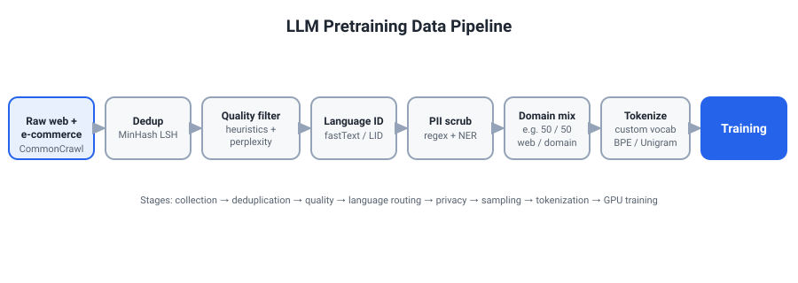
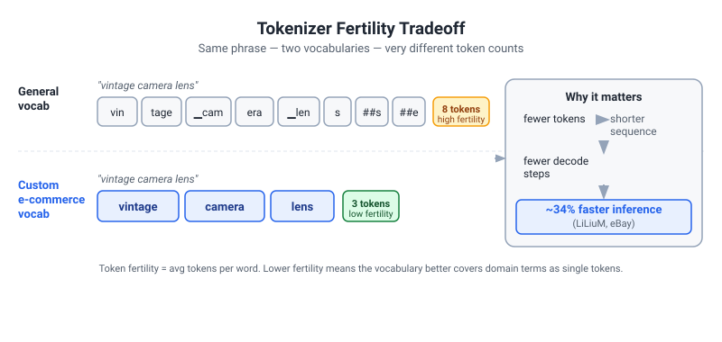
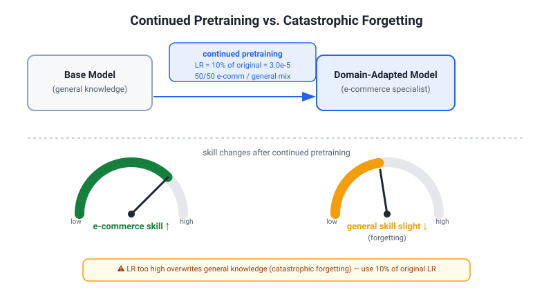
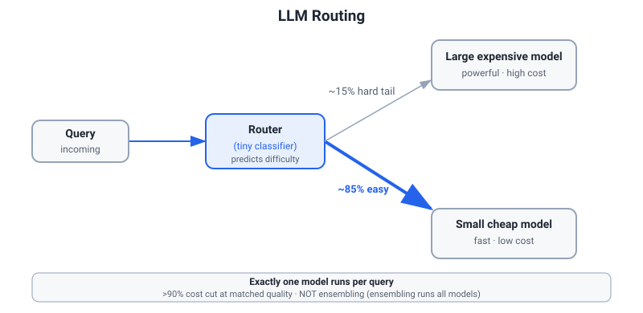
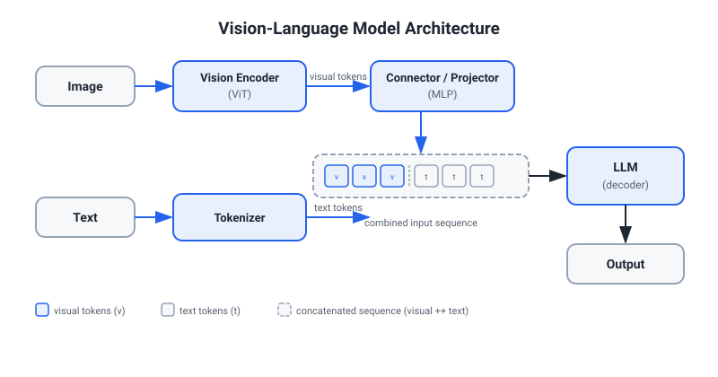

Stage 1 Master Prep Doc — ML, LLM & NLP Research Interview with Yannick Versley (eBay)
Priority / how to use: Read sections C (LLM Pretraining) and H (NLP through Comp-Ling lens) first — these are Versley's home turf. Then sections I (Routing/Efficiency — Tony's signature strength), D (Post-training), and J (VLMs — Versley's current work). Sections A–B (ML + DL foundations) are rapid-fire backup. Section L (SOTA 2025-2026), the 10 most-likely questions, and the red-flags are for final-hour review. Every Q is followed by a model answer — study the answers, not just the questions.
SECTION A: ML FOUNDATIONS
A1. Bias-Variance Tradeoff
Q: Explain the bias-variance tradeoff. Give concrete examples.
Model Answer:
Prediction error decomposes as: E[(y - ŷ)²] = Bias² + Variance + Irreducible Noise.
- Bias = systematic error from wrong model assumptions. A linear model fit to nonlinear data has high bias — it underfits.
- Variance = sensitivity to fluctuations in training data. A deep unpruned decision tree memorizes training data; small data changes produce very different trees — it overfits.
- Irreducible noise = inherent label noise; cannot be modeled away.
Classic tradeoff: as model complexity increases, bias falls but variance rises. Optimal complexity minimizes total error.
Concrete examples:
- LLM in-context learning with 1 example vs. 10 examples: fewer shots = higher bias (less information) but lower variance (less risk of spurious patterns).
- Routing a query to a small 7B model vs. a 70B model: 7B has higher bias on hard tasks, 70B has higher variance on simple tasks (more prone to overthinking). This is exactly the tradeoff Tony's LLM Router addresses — match query difficulty to model capacity.
- In Tony's nnU-Net pruning (>80% of weights removed while proxy Dice stays >0.95): extreme pruning increases bias (capacity removed) but reduces variance (fewer redundant features to overfit). Finding that >80% of weights can be removed with minimal degradation means the original model was highly over-parameterized.
In practice for neural networks: bias is addressed by architecture (depth, width, attention span); variance is addressed by regularization (dropout, weight decay, data augmentation, early stopping, ensemble). The double-descent phenomenon complicates the classical picture. In classical models, test error forms a U-curve: as model complexity grows, error first falls (bias reduction) then rises (variance inflation). The interpolation threshold is the point where model capacity is just large enough to fit the training data exactly; near this threshold, test error peaks. Beyond it, in the over-parameterized regime, something unexpected happens: test error descends again, even though the model memorizes training data. This "benign overfitting" occurs because an over-parameterized model has many solutions that interpolate the training data, and gradient descent tends to find one with a particular inductive bias (e.g., minimum-norm) that generalizes. The role of inductive bias is critical — the architecture's implicit regularization (e.g., residual connections, attention's structural bias toward sparse patterns) determines how well the model generalizes in this regime. LLMs live firmly in this over-parameterized regime, which is why adding more parameters can improve generalization even when training loss is already near zero.
A2. Regularization: L1, L2, Dropout
Q: Compare L1, L2, and dropout regularization. When do you prefer each?
Model Answer:
L2 (Ridge / Weight Decay):
L = Loss + λ Σ wᵢ²
Gradient effect: each weight decays multiplicatively by (1 - 2λ·lr) per step. Encourages small but nonzero weights — spreads importance across many features. Probabilistic interpretation: MAP with Gaussian prior on weights. AdamW implements L2 correctly (decoupled from adaptive gradient scaling, unlike standard Adam which confounds L2 with gradient magnitudes). Use for: general neural network training; the default for LLMs.
L1 (Lasso):
L = Loss + λ Σ |wᵢ|
Gradient is constant ±λ regardless of weight magnitude → weights get pushed exactly to zero → sparsity. Probabilistic interpretation: MAP with Laplace prior. Use when: you want sparse feature selection (e.g., text classification with bag-of-words features). In deep learning, L1 is rarely used alone; Tony's pruning work uses magnitude-based criteria that achieve similar effects more explicitly.
Dropout:
During training, zero each neuron independently with probability p; scale remaining activations by 1/(1-p). At test time, use all neurons (multiply by (1-p) or equivalently use expected value). Ensembling interpretation: dropout samples a random sub-network each step, effectively training an exponential number of sub-networks that share weights. Use when: model is large relative to data; less useful when model is already regularized (batch norm already provides implicit regularization).
For LLMs: AdamW (L2) + gradient clipping are the standard. Dropout is often small or zero in large models (empirically hurts more than helps at scale because the model capacity is needed, and stochasticity during pretraining adds instability). Residual dropout is sometimes used in post-training (SFT) stages.
A3. Adam, AdamW, Learning Rate Schedules
Q: How does Adam work? What does AdamW fix? Why is LR warmup important for LLM pretraining?
Model Answer:
Adam (Kingma & Ba, 2014):
Maintains per-parameter first moment (mean) m and second moment (uncentered variance) v:
m_t = β₁ m_{t-1} + (1 - β₁) g_t # momentum
v_t = β₂ v_{t-1} + (1 - β₂) g_t² # RMS
m̂_t = m_t / (1 - β₁ᵗ) # bias correction
v̂_t = v_t / (1 - β₂ᵗ)
θ_t = θ_{t-1} - α · m̂_t / (√v̂_t + ε)
Typical values: β₁=0.9, β₂=0.95 (for LLMs; 0.999 was original but too slow to forget), α=1e-4 to 3e-4, ε=1e-8.
The L2 / Adam interaction bug (AdamW): In standard Adam+L2, the weight decay term λw is added to the gradient g_t, then divided by √v̂_t. This means L2 strength is adapted per-parameter — parameters with large gradient variance get less regularization, which is wrong. AdamW decouples L2: applies weight decay directly to the parameter after the Adam update: θ ← θ - α (m̂/√v̂ + ε) - λθ. Result: consistent regularization independent of gradient history. This is meaningful for LLMs where some layers (embedding) have sparse gradients but others (attention) have dense — standard Adam under-regularizes sparse-gradient parameters.
LR Warmup for LLMs: At training start, weights are randomly initialized, so early gradients are noisy and large. Applying the full learning rate immediately means large updates can destroy useful loss-basin structure before Adam's moment estimates (m_t, v_t) have had time to stabilize. Note: bias correction already handles the literal cold-start of the moment estimates — the actual concern is the unreliable gradient signal itself, not the bias-correction math. Warmup linearly ramps LR from 0 to target over ~1000–2000 steps, giving moment estimates time to accumulate meaningful signal before the full LR is applied. Evidence: models trained without warmup often diverge in the first 100 steps.
Cosine decay schedule: After warmup, LR decays following cosine curve to α_min ≈ 0.1 × α_max. Smooth decay gives gradual convergence. eBay's e-Llama paper used cosine schedule with warmup.
Cooldown / Trapezoidal Schedule (2025): Recent work (MiniMax-01, SmolLM2) advocates for a final LR cooldown phase (constant LR → rapid cosine decay in last 10–20% of training) during which high-quality domain data or instruction-following data is injected — a form of simultaneous pretraining + light SFT. This improves final quality without a separate SFT run.
A4. Generalization, Evaluation, and Calibration
Q: What is model calibration? How do you measure it, and why does it matter for production ML?
Model Answer:
A model is calibrated if its predicted probabilities match empirical frequencies: when the model says 80% confidence, the event should occur ~80% of the time. Formally: P(Y=1 | P̂(Y=1) = p) = p for all p.
Measuring calibration:
- Expected Calibration Error (ECE): bin predictions by confidence → compare mean predicted confidence vs. fraction positive in each bin → weighted average of |confidence - accuracy|.
- Reliability diagram: plot predicted confidence (x-axis) vs. accuracy (y-axis). Perfect calibration = diagonal. Over-confident models show curve below diagonal.
- Brier Score:
(P̂ - Y)²— combines calibration and sharpness.
Why it matters for LLM inference:
- LLM routing (Tony's work) depends on confidence: a router that says "60% confident this query needs the big model" must be calibrated for the cost threshold to be meaningful. Miscalibrated routers either over-use expensive models or incorrectly route hard queries to cheap ones.
- In eBay's ads keyphrase relevance (LLM-as-judge), calibration determines whether LLM confidence scores can be thresholded for automated decision-making.
Common calibration issues in LLMs:
- LLMs are notoriously over-confident in factual assertions but under-confident when asked explicit probability questions.
- Temperature scaling: divide logits by T > 1 before softmax → softens distribution → improves calibration. Calibration temperature is fit on a held-out validation set. Simple and effective.
- Label smoothing during training: replaces one-hot targets
(0, 1)with(ε/K, 1-ε+ε/K). Prevents overconfident predictions; improves calibration at training time.
A5. Data Leakage and Evaluation Design
Q: What is data leakage? Give an LLM-specific example. How do you prevent it?
Model Answer:
Data leakage: information from the test/future partition is directly or indirectly available to the model during training, causing artificially inflated evaluation metrics that don't reflect deployment performance.
LLM-specific example — benchmark contamination: Modern LLMs are pretrained on web-scale data that often contains benchmark questions and answers (MMLU, GSM8K, HumanEval). A model scoring 90% on MMLU may have seen those exact questions during pretraining. Studies (Golchin & Surdeanu 2023) show substantial contamination in GPT-4 and LLaMA evaluations. eBay's approach of constructing five new multilingual e-commerce benchmarks (Aspect Prediction, Price Prediction, Most Common Aspects) specifically addresses this — proprietary internal benchmarks cannot be in the training data.
Other LLM leakage forms:
- Fine-tuning data contaminated by test labels (e.g., train set contains ground truth for val/test).
- Embeddings trained on full dataset then used for cross-validation.
- Future signals used as features in time-series recommendation (user history after the prediction point).
Prevention:
- Time-based splits for sequential data (not random split).
- Construct held-out benchmarks from data not publicly accessible (eBay's internal benchmark strategy).
- Use n-gram overlap checks between training data and evaluation sets.
- For continued pretraining: hold out evaluation data before any pretraining step.
- Dynamic/live benchmarks (LiveCodeBench, Chatbot Arena with new questions) that cannot be contaminated.
A6. Classification Metrics
Q: When do you use precision vs. recall vs. F1 vs. AUC-ROC? Give an e-commerce example.
Model Answer:
Definitions:
Precision = TP / (TP + FP)— of predicted positives, how many are correct?Recall = TP / (TP + FN)— of actual positives, how many did we catch?F1 = 2 × P × R / (P + R)— harmonic mean; good when both matter equally.AUC-ROC= area under TPR vs. FPR curve across all thresholds. Measures discriminative ability; threshold-independent.AUC=1: perfect;AUC=0.5: random.
When to use which:
| Scenario | Metric | Why |
|---|---|---|
| Fraud detection | High recall | Missing fraud = very costly; false alarms tolerable |
| Content moderation (conservative) | High precision | Bad to block good content; tolerate some bad slipping through |
| E-commerce product compliance | F1 | Both false blocks and missed violations matter |
| Ad keyphrase relevance (eBay) | AUC or Precision@K | Ranking task; threshold is tuned separately |
| Machine translation quality | chrF / COMET | Not classification; character n-gram overlap |
| LLM routing | Calibration + coverage | Must match cost-quality Pareto |
eBay-specific: For the Magical Listing attribute extraction task (Versley et al., arXiv:2602.11733 (2026)), they report F1 — because both false attributes (noise) and missed attributes (incomplete listing) hurt seller experience. For Aspect Prediction (whether a model can predict what attributes a product should have), they use accuracy as the task is framed as classification over a fixed attribute set.
Important: AUC-ROC can be misleading under heavy class imbalance (few positives). Use AUC-PR (Precision-Recall AUC) instead, which focuses only on the positive class performance.
SECTION B: DEEP LEARNING AND TRANSFORMERS FROM SCRATCH
B1. Attention Mechanism — Complete Math
Q: Derive the attention mechanism from scratch. Why scale by √dₖ? What is multi-head attention?
Model Answer:
Self-attention:
Given input X ∈ R^{n×d}, project to queries, keys, values:
Q = X Wq, K = X Wk, V = X Wv (Wq, Wk, Wv ∈ R^{d×dₖ})
Attention(Q, K, V) = softmax(Q Kᵀ / √dₖ) V
Why / √dₖ?
The dot product q·k = Σᵢ qᵢkᵢ. If q and k are i.i.d. with mean 0, variance 1, then q·k has mean 0 and variance dₖ (sum of dₖ unit-variance terms). Without scaling, logits grow like O(√dₖ) → at large dₖ (e.g., 128), the softmax becomes extremely peaked → near-zero gradients for most positions → attention collapses to one position. Dividing by √dₖ restores unit variance, keeping softmax in its useful gradient region.
Multi-head attention: Run h parallel attention heads with smaller dₖ = d/h:
head_i = Attention(Q Wq_i, K Wk_i, V Wv_i)
MultiHead(Q, K, V) = Concat(head_1, ..., head_h) W_o
Each head tends to specialize in different relational patterns (some appear syntactic, some semantic, some positional). However, attention weights are not reliably interpretable as explanations: Jain & Wallace (2019) and Wiegreffe & Pinter (2019) showed that attention weights can be manipulated without changing model output, and do not necessarily correspond to feature importance. Treat attention patterns as a diagnostic tool, not a ground-truth explanation. With h=16 and d=4096 in a 7B model, each head has dₖ=256.
Causal masking (decoder-only LLMs):
Add a lower-triangular mask before softmax: future positions get -inf logits → softmax assigns them zero probability. Ensures autoregressive generation — position i can only attend to positions 1..i.
Complexity: O(n² × dₖ) per head, O(n² × d) total. Quadratic in sequence length — the primary bottleneck at long context.
FlashAttention: rewrites as tiled block computation. Never materializes the full n×n attention matrix in HBM; uses online softmax (Milakov & Gimelshein) within tiles. Same mathematical result with O(n) memory instead of O(n²). FlashAttention-3 (2025) adds async compute and FP8 support for H100.
GQA / MQA (directly relevant to LiLiuM and e-Llama):
Standard multi-head attention (MHA) uses H independent KV head pairs. Grouped Query Attention (GQA) groups H query heads to share G < H KV heads (G=8 typical for Llama 3). Multi-Query Attention (MQA) takes this to the limit with G=1 — one shared KV head for all queries. The KV cache at inference time scales as 2 × n_layers × n_kv_heads × d_head × seq_len — so GQA with G=8 vs H=32 gives a 4× KV cache reduction with minimal quality loss. e-Llama (Llama 3.1 based) uses GQA with G=8. If Versley asks "what architectural change in LiLiuM most reduces serving memory?", the answer is GQA — it directly slashes the KV cache footprint that dominates memory at serving time with long contexts.
B2. Positional Encodings: RoPE, ALiBi
Q: Compare RoPE and ALiBi. Which does eBay use and why?
Model Answer:
Original sinusoidal (legacy): Fixed sinusoidal functions encode absolute position. Works at training length but cannot generalize beyond. Used in original Transformer, GPT-2.
RoPE (Su et al. 2021):
Rotates the query and key vectors in 2D planes by angle mθ_i where m=position, θ_i = 10000^{-2i/d}:
Rotate Q[2i:2i+2] by angle m·θᵢ
Rotate K[2i:2i+2] by angle n·θᵢ
→ (RQ_m) · (RK_n)ᵀ = Q_m · R_{m-n} · Kₙᵀ (depends only on m-n)
The relative position (m-n) appears naturally in the dot product — RoPE encodes relative position without explicit relative attention bias. No learned parameters. Used in: LLaMA (all versions), Mistral, Qwen, Gemma, Claude families.
LiLiuM uses RoPE (per arXiv 2406.12023 — "context length 4096, RoPE positional embeddings"). The e-Llama continued pretraining (at 8k context) also uses RoPE, benefiting from Llama 3.1's YaRN-extended RoPE.
YaRN (Peng et al. 2023) / LongRoPE: Long-context RoPE extension. Scale rotational frequencies differently for different frequency bands — high-frequency dimensions (small θᵢ) are more sensitive to extrapolation; scale them more aggressively. Fine-tune briefly on long documents with YaRN-modified RoPE → stable 32k–128k context extension. Used in Llama 3.1 (up to 128k).
ALiBi (Press et al. 2021): Does not modify Q/K; instead adds a learned-free linear bias to attention logits:
Score_{m,n} = (Q_m · K_n) / √dₖ - slope_h · (m - n)
slope_h is a geometric sequence per head (head h uses slope 2^{-8h/H}). As distance m-n grows, bias grows negatively → attention decays with distance. Key advantage: generalizes to longer sequences than training without finetuning (bias just continues growing). Used in MPT, BLOOM.
RoPE vs ALiBi tradeoffs:
| Property | RoPE | ALiBi |
|---|---|---|
| Long-context generalization | Needs YaRN fine-tuning | Natural, no finetuning |
| Absolute quality within trained range | Better | Slightly worse |
| Parameter count | None | None |
| Adoption (2025) | Universal | Declining |
For eBay: RoPE is the right choice for LiLiuM given the need for continued pretraining to extend context (e-Llama uses 8k context) and the LLaMA ecosystem compatibility for building e-Llama.
B3. RMSNorm vs LayerNorm; Pre-Norm vs Post-Norm
Q: Why do modern LLMs use RMSNorm pre-norm instead of LayerNorm post-norm?
Model Answer:
LayerNorm: Normalizes across feature dimension, then applies learned scale γ and shift β:
LayerNorm(x) = γ · (x - μ) / √(σ² + ε) + β (μ, σ² computed over feature dim)
RMSNorm (Zhang & Sennrich, 2019): drops mean subtraction and learned bias:
RMSNorm(x) = γ · x / √(mean(x²) + ε)
No mean computation, no bias parameter. ~10-30% faster than LayerNorm in practice. Theoretically: the mean subtraction in LayerNorm provides invariance to input shift; empirically this invariance is not important for transformers (residual connections already handle scale). RMSNorm is shift-variant but re-scale-invariant — sufficient for transformer layers.
Used in: LLaMA (all), Mistral, Qwen, Gemma, Claude. LiLiuM also uses RMSNorm (SwiGLU + RMSNorm architecture, consistent with LLaMA lineage).
Pre-Norm (before sublayer) vs Post-Norm (original "Attention is All You Need"):
Post-Norm: x = LayerNorm(x + Sublayer(x)) — normalizes after residual. Gradients flow through the normalization on the residual path → can vanish in deep networks (early layers receive tiny gradients).
Pre-Norm: x = x + Sublayer(LayerNorm(x)) — normalizes the sublayer input, not the full residual. The residual highway carries raw, unnormalized signal → gradients flow without attenuation through the + connection.
Result of Pre-Norm: More stable training at depth; enables gradient flow to early layers; allows very deep models without instability. All modern LLMs (LLaMA, GPT-4, Claude, Gemini) use pre-norm. The original paper's post-norm works but requires careful LR tuning and warmup.
B4. Mixed Precision Training
Q: When do you use FP16 vs. BF16? What is a master weight copy and why is it needed?
Model Answer:
FP16 (16-bit float): 1 sign, 5 exponent, 10 mantissa bits. Range: ~6×10⁻⁵ to ~6.5×10⁴. Dynamic range is narrow — large gradient values (e.g., from attention over long sequences) can cause overflow (becomes infinity). Historically required loss scaling (multiply loss by S before backward, divide gradients by S after) to prevent underflow in small gradients.
BF16 (Brain Float 16): 1 sign, 8 exponent, 7 mantissa bits. Same exponent as FP32 → same dynamic range → no overflow/underflow with large gradients → no loss scaling needed. Precision is lower (7 mantissa bits vs 10 in FP16) but this rarely matters for gradients. Requires hardware support (A100, H100, TPU v3+).
Recommendation: Always use BF16 on modern hardware (A100/H100). FP16 only if BF16 unavailable (older V100s). eBay's e-Llama training on 480 H100s uses BF16 (industry standard).
Master weight copy (mixed precision): Model weights stored in FP32 (master copy); forward and backward passes computed in BF16/FP16. After backward, gradients are cast to FP32, applied to FP32 master weights, then FP32 weights are cast back to BF16 for next forward pass.
Why? Adam's optimizer state (first and second moment) requires high precision to track small weight updates correctly. A weight update α · m̂/√v̂ can be as small as 1e-7 relative to weight magnitude. In FP16/BF16 (smallest representable nonzero ~1.2×10⁻⁷), many small updates would be rounded to exactly zero → optimizer makes no progress. FP32 (precision ~1e-7 relative) preserves these increments.
Memory implication: 16-bit weights (2 bytes) + FP32 copy (4 bytes) + FP32 Adam moments (8 bytes) = 14 bytes per parameter. A 70B model requires ~980 GB for optimizer state alone — forcing pipeline/tensor parallelism.
B5. Distributed Training Taxonomy
Q: Compare DP, FSDP/ZeRO, tensor parallelism, and pipeline parallelism. When do you use each?
Model Answer:
Data Parallelism (DP): Each GPU holds a full model copy; minibatch distributed. After backward, gradients all-reduced (ring-allreduce or parameter server). Memory per GPU: full model + full Adam state + gradients (~14 bytes/param). OK for models that fit on one GPU (~7B on 80GB with BF16 + optimizer offload).
ZeRO / FSDP (Fully Sharded Data Parallelism):
DeepSpeed ZeRO shards across N DP ranks:
- ZeRO-1: Shard optimizer states only. Memory saved per GPU: 4× (optimizer states = 12 bytes of 16 total).
- ZeRO-2: Shard optimizer states + gradients. Memory saved: ~8×.
- ZeRO-3 / FSDP: Shard parameters too. Each GPU holds
1/Nof all parameters. Gather parameters just-in-time for each forward/backward layer; re-shard immediately. Memory per GPU:14B/N(where B = parameter count in bytes). Communication cost: extra all-gathers + reduce-scatters of parameters (2× more communication than vanilla DP).
Use FSDP for: models that don't fit in single GPU; academic/research scale (easier to configure than Megatron).
Tensor Parallelism (TP): Split weight matrices column-wise then row-wise within each layer:
y = W₁ x = [W₁_A | W₁_B] [x] → all-reduce across TP ranks
Each attention head or FFN column shard lives on one GPU. Requires all-reduce after every transformer layer's attention and FFN. Must use NVLink (within-node, 600 GB/s bandwidth) — InfiniBand is too slow for synchronous all-reduce per layer. Megatron-LM standard: TP=8 (8 GPUs in a node).
Pipeline Parallelism (PP): Assign consecutive layer groups to different GPU ranks. Pass activation tensors between stages. Micro-batch pipelining to hide bubbles:
Bubble fraction = (PP - 1) / (micro_batches + PP - 1)
With PP=16 and 32 micro-batches: bubble fraction ≈ 31%. Interleaved schedule (Narayanan et al. 2021) further reduces bubbles. Used across nodes (InfiniBand is sufficient for point-to-point stage communication). eBay's e-Llama: Megatron-LM on 480 H100s (60 nodes × 8 GPUs/node), likely TP=8, PP=8–16.
Context Parallelism (CP): Split sequence dimension across GPUs; ring attention pattern for long sequences. Adds all-to-all KV communication. Llama 3 training: 4D parallelism = TP × PP × CP × DP.
Expert Parallelism (EP) for MoE: Each GPU holds a subset of experts. All-to-all dispatch: token-to-expert routing requires sending token embeddings to the GPU holding that expert. Communication overhead scales with number of tokens and experts.
SECTION C: LLM PRETRAINING — DEEPEST SECTION (VERSLEY'S SPECIALTY)
C1. Data Curation Pipeline

Q: Walk through the complete data curation pipeline for pretraining a 7B LLM on 3T tokens. What does eBay do differently?
Model Answer:
Stage 1 — Collection:
- Web crawls (CommonCrawl, WARC format → WET text extraction). Snapshots from 2013–2024.
- Books (Project Gutenberg, Books3, legal ebook sets).
- Code (GitHub, StackOverflow, filtered for license).
- Scientific/academic text (ArXiv, PubMed, Semantic Scholar).
- Wikipedia, Wikidata, encyclopedias (high quality, multilingual).
- Domain-specific: e-commerce listings, product reviews, parallel MT data (critical for LiLiuM).
Stage 2 — Language identification: FastText or CLD3 language classifier → assigns language label with confidence. Filter documents below threshold. For LiLiuM: explicitly includes DE, ES, IT, FR text (multilingual capability requirement).
Stage 3 — Quality filtering (heuristics):
- Minimum doc length (< 100 chars = not useful).
- Fraction of alphabetic characters (low fraction = spam, code mixed in).
- Average line length (< 3 chars/line = tables/navigation menu).
- Fraction of lines ending in punctuation (prose vs. lists).
- Fraction of duplicate lines / paragraphs within document.
- "Stop-word density" (very low = machine-generated text).
- Perplexity filter: train small LM on Wikipedia → high perplexity docs = non-prose, filtered out.
Stage 4 — Deduplication: MinHash LSH (locality-sensitive hashing on shingles of tokens): documents mapped to hash signatures; pairs with Jaccard similarity > threshold (e.g., 0.8) are near-duplicates → keep one. Can operate at paragraph level for finer granularity. Exact substring deduplication: suffix array to find repeated verbatim spans across all documents. Effect: prevents memorization, improves per-token diversity, reduces learning time wasted on repetition.
D4 (Tirumala et al. 2023) showed that semantic diversity after dedup (measuring embedding spread) predicts downstream task performance better than raw token count.
Stage 5 — Toxic/PII removal: Blocklists, classifier-based toxic detection, regex for email/phone/SSN patterns. eBay: critical for buyer/seller PII in listings.
Stage 6 — Domain mixing and sampling: Explicit sampling weights per domain. LiLiuM general+e-commerce mix (unknown exact ratio from paper). e-Llama: 50% e-commerce, 50% general (ablated — see e-Llama paper, arXiv 2501.09706). A small non-English fraction is also included.
Key insight from e-Llama ablation: 75% e-commerce → no further e-commerce gain, but general score degrades. 50/50 is the sweet spot. This is a direct empirical finding from Versley's team.
Stage 7 — E-commerce data serialization:
Product listings are structured (title, category, price, item specifics, description). Naive serialization: "Title: Nike Air Max | Category: Shoes | Price: $120 | Color: Red, Size: 10". Consistent format across training allows the model to learn the schema. JSON is also common. Key challenge: item specifics have hundreds of keys with sparse values — need to decide how to represent absent attributes (skip? None?). This is a real design problem Versley's team faced.
eBay's specifics:
- MinHash LSH for deduplication (industry standard for web-scale corpora at this size).
- Includes code + parallel MT data in the 3T.
- Custom 65k vocabulary tokenizer — designed to minimize token fertility for e-commerce text (brand names, product categories, multilingual terms become single tokens).
C2. Tokenization: BPE, Unigram, Domain Vocabulary

Q: Explain BPE tokenization. What is "token fertility" and why did eBay build a custom tokenizer?
Model Answer:
BPE (Byte-Pair Encoding — Sennrich et al. 2016, byte-level GPT-2 variant):
Algorithm:
- Initialize vocabulary as all UTF-8 bytes (256 tokens) or character-level.
- Count all adjacent byte-pair frequencies in corpus.
- Merge most frequent pair into a new token; add to vocabulary.
- Repeat until vocabulary reaches target size (e.g., 32k, 128k).
Byte-level BPE (GPT-2 onwards): start from bytes → zero OOV tokens (any text is representable).
WordPiece (BERT): Similar to BPE but merge criterion is likelihood increase (freq(AB) - freq(A)×freq(B)) / freq(A)×freq(B) — probabilistic rather than frequency-only. Handles morphological richness better in some languages.
Unigram LM (SentencePiece): Start with large vocabulary, prune by computing likelihood loss of removing each token and removing the least impactful. Advantage: no pre-tokenization boundary (doesn't split on whitespace) → works better for languages without word boundaries (Japanese, Chinese, agglutinative languages).
Vocabulary size effects:
- Larger vocab → shorter sequences (fewer tokens per character) → cheaper attention → faster inference.
- Larger vocab → bigger embedding matrix → more parameters (but relatively few: 65k × 4096 × 2 bytes = 512 MB for a 7B model, <1% of total params).
- Larger vocab → rarer tokens → less training signal per token → harder to learn good embeddings for rare tokens.
- Modern frontier: 128k (Llama 3), 256k (Gemma 3), 32k (Llama 2).
Token fertility: Number of tokens produced per word (or per character) for a given text type. High fertility = more tokens = more forward passes = higher inference cost. General BPE tokenizers have high fertility on domain-specific text: product codes, model numbers, non-English terms.
eBay's custom tokenizer (LiLiuM): 65k vocabulary, designed to have:
- Full control over special tokens for e-commerce schema (category delimiters, attribute separators).
- Better multilingual coverage (explicit inclusion of German, Spanish, French, Italian vocabulary).
- E-commerce term merges: common brand names, category names, product identifiers as single tokens instead of 3-4 subword tokens.
Result: 34% faster generation on eBay tasks vs. LLaMA-2 tokenizer (which has 32k vocabulary optimized for English).
Versley's Sept 2025 vocabulary extension paper (arXiv 2509.26124): subsequent work extends an existing tokenizer (preserving its existing merge rules) with domain-specific tokens, guaranteeing token count never increases. Achieves up to 20% sequence compression on e-commerce text. Key constraint: monotone guarantee (no regression on any input) is important for production deployment — you can't regress existing production pipelines.
C3. Scaling Laws and Compute-Optimal Training
Q: State Chinchilla's result. What happens when you account for inference cost? How does this affect eBay's decisions?
Model Answer:
Chinchilla (Hoffmann et al. 2022 — DeepMind):
Key insight: the C ≈ 6ND compute approximation (N=parameters, D=training tokens; factor of 6 for forward+backward+optimizer) originates with Kaplan et al. 2020, not Hoffmann. Hoffmann et al.'s contribution is the compute-optimal token/parameter ratio — their finding that loss is minimized when:
N_opt ∝ √C / constant → N ∝ D (equal scaling of parameters and tokens)
D_opt / N_opt ≈ 20 tokens/parameter
Prior practice (GPT-3 era): 175B parameters trained on ~300B tokens ≈ 1.7 tokens/param — severely undertraining by Chinchilla. Chinchilla-optimal: ~70B model on ~1.4T tokens achieves same loss as GPT-3 at same FLOPs but with better downstream performance (smaller model that fits more data).
Empirical losses:
L(N, D) = E + A/N^α + B/D^β (α ≈ 0.34, β ≈ 0.28 from Hoffmann fits)
Beyond Chinchilla — Inference-Aware Scaling (Sardana & Frankle 2024): Chinchilla optimizes training loss for a fixed compute budget. But in deployment, the total compute is:
C_total = C_train + 2N · K
where K = inference tokens served over the model's lifetime. Optimal N shifts downward as K increases (inference cost dominates). For K = 10¹¹ tokens (typical large deployment), the optimal model is significantly smaller and trained longer than Chinchilla would suggest. This justifies the modern "overtraining" trend: Llama 3 (8B on 15T tokens), Qwen 3 (36T tokens) — deliberately overtrained from a pure training-loss standpoint, but optimal once inference cost is factored in.
The deployment multiplier decision comes down to: at what serving traffic does the 1B/7B decision become optimal? A 1B model served to 10⁸ users/day at 1k tokens/query accumulates K ≈ 10¹¹ tokens/day — at that scale, even a 3× training cost premium to build a smaller model that serves 3× faster pays off in weeks.
Implications for eBay:
- LiLiuM at 1B/7B/13B on 3T tokens: the 1B is substantially Chinchilla-overtrained (Chinchilla-optimal at 20 tokens/param ≈ 20B tokens; 3T is 150×). This is intentional inference-aware overtraining — a smaller model trained much longer, not an accident.
- e-Llama: 8B model, 1T domain tokens — the focus is domain adaptation efficiency within a fixed compute budget, not minimizing training loss.
- The 7B vs. 13B serving decision: at eBay's query volume (~100M+ listings served/day), a 7B model costs roughly 10× less per token than a 70B model in latency and compute — reinforcing the inference-aware logic.
Task-dependent scaling: Chinchilla assumes averaged benchmark performance. For memorization-heavy tasks (factual recall): lower D/N ratio (bigger model, less data). For reasoning tasks: higher D/N ratio (train smaller model longer, more diverse examples). E-commerce aspect prediction (classification-like) likely benefits from moderate D/N.
C4. Pretraining Objectives: CLM, MLM, UL2
Q: Compare causal language modeling, masked language modeling, and UL2. For an LLM used in generation and classification, which pretraining objective?
Model Answer:
CLM (Causal Language Modeling / Autoregressive): Objective: predict next token given all preceding tokens:
L_CLM = -Σ_t log P(x_t | x_{<t})
Decoder-only transformer with causal mask. Models the full joint distribution P(x₁, ..., xₙ). Natural fit for generation tasks. GPT family, LLaMA, LiLiuM, Qwen, Gemma — all CLM.
Pros: Generative; natural for open-ended generation, dialogue, code, MT. Can do classification as next-token generation (e.g., output "Yes/No"). Single objective, simple. Cons: Each token sees only leftward context (except in-context right-context through inference-time generation); less bidirectional understanding than MLM for some classification tasks.
MLM (Masked Language Modeling): Randomly mask 15% of tokens; predict masked tokens from bidirectional context:
L_MLM = -Σ_{masked i} log P(x_i | x_{surrounding})
BERT: mask 80% of selected tokens, replace 10% with random, keep 10% as-is. Encoder-only. Not generative.
Pros: Bidirectional context → strong representations for token classification (NER, coreference), sentence-level tasks. Cons: Not generative; slow fine-tuning loop; doesn't naturally produce text; training objective doesn't match generation. For Versley's coreference work: BERT-style MLM models were dominant until 2021; now replaced by in-context prompting of CLM models.
UL2 (Unifying Language Learning Objectives — Google, 2022): Combines multiple denoising objectives:
- R-denoise: BERT-style short masking (15%, short spans).
- S-denoise: GPT-style causal prefix LM (predict right half given left half).
- X-denoise: extreme denoising (masked 50% in long spans) for abstractive generation.
Input:
[S2S],[NLU],[NLG]mode tokens indicate which objective.
T5 / FLAN-T5 use span corruption (masked spans → target). Encoder-decoder architecture enables efficient bidirectional encoding + autoregressive decoding.
For eBay use cases:
- E-commerce attribute prediction (classification) → CLM models with zero-shot/few-shot prompting outperform MLM in 2025.
- Machine translation → CLM (e.g., Mixtral-8x7B in eBay's RAG-for-MT paper).
- LiLiuM: CLM (decoder-only), consistent with current practice.
- Why CLM over encoder-decoder: single model for all tasks, no encoder-decoder alignment cost, simpler architecture, benefits from scale.
C5. Training Stability: Loss Spikes, QK-Norm, Z-Loss
Q: What causes loss spikes during LLM pretraining? How do you prevent and recover from them?
Model Answer:
What loss spikes look like: Sudden jump in training loss by 2–10×, often recovering over 100–1000 steps. Catastrophic if unrecovered (rare but possible). Common in runs > 100B tokens.
Root causes:
-
Attention logit explosion: Without normalization, Q and K grow with training →
Q Kᵀ / √dₖlogits become very large (>100) → softmax becomes near-one-hot → essentially single-token attention → model collapses to copying. This creates a spike in cross-entropy. Solution: QK-Norm — apply RMSNorm to Q and K before computing attention. Adopted in Gemma 2, Mistral Nemo, Llama 3.1 training. Adopted by eBay team (consistent with modern practice). -
Data quality outliers: A batch of extremely high-perplexity text (machine-generated garbage, corrupted encoding) produces very high loss → very large gradient → spikes Adam second moment → subsequent updates distorted. Solution: robust data filtering upstream; optionally clip loss per sample before averaging.
-
Adam second moment lag: When a previously rare parameter suddenly receives large gradient,
v_tcatches up slowly → effective LR temporarily very large → overshoots. Solution: spike-aware momentum reset (SPAM, 2025): detect spike onset, zero out Adamm_tandv_tfor affected parameters. -
FP16 overflow (legacy): Large logits cause FP16 overflow. Solved by BF16.
-
Router instability in MoE: Gating softmax logits grow → single expert captures all tokens → load imbalance → huge gradient on that expert's parameters → spike. Solution: z-loss (auxiliary loss penalizing large softmax logits in the router):
z_loss = ε · (1/B) Σ_b (log Σ_e exp(g_{b,e}))²
Keeps router logits bounded.
Prevention checklist:
- Pre-norm architecture (not post-norm).
- BF16 (not FP16).
- QK-Norm.
- Gradient clipping (global norm ≤ 1.0).
- LR warmup (1k–2k steps).
- Z-loss for MoE.
- Good data filtering.
- μP for consistent LR across scales (see C9).
Recovery from a spike:
- Detect via monitoring (loss > 2× moving average).
- Roll back to checkpoint before spike (typical: checkpoint every 1000 steps).
- Identify if data-related (skip offending batch) or optimizer-related (reduce LR temporarily).
- Resume from rolled-back checkpoint. If SPAM is available, use momentum reset instead of full rollback.
Checkpoint averaging (eBay/LiLiuM): Averaging multiple checkpoints near training end smooths over late-stage instabilities and small spikes → better generalization than single best checkpoint. Similar to SWA (Stochastic Weight Averaging).
C6. Continued Pretraining vs. Full Pretraining vs. SFT — The Domain Adaptation Decision

Q: When do you train from scratch vs. continued pretraining vs. SFT? Walk through eBay's decision for e-Llama.
Model Answer:
Options for domain adaptation:
| Method | What it does | Compute cost | Data required | When to choose |
|---|---|---|---|---|
| Train from scratch | Full pretraining from random init | Very high (100k+ GPU-hours for 7B) | Billions–trillions of tokens | Need full vocabulary/architecture control; proprietary data at massive scale; want zero license risk |
| Continued pretraining | Resume pretraining of a pretrained model on domain data | Medium (5–20% of original cost) | 50B–1T tokens | Strong base model exists; want domain adaptation + general retention |
| SFT (instruction tuning) | Fine-tune on (instruction, response) examples | Low (1–100 GPU-hours) | 1k–1M examples | Teach format, style, specific tasks; base model already has domain knowledge |
| RAG | Augment inference with retrieved context | Near-zero training cost | Existing documents | Knowledge too specialized, too frequently updated, or too large to memorize |
eBay's dual-track strategy:
- Track A (LiLiuM, 2023-2024): Train from scratch. Rationale: full vocabulary control (custom 65k tokenizer), full data control (PII risk with external model licenses), architectural choices, no reliance on Meta/OpenAI. Cost: likely 50k+ H100-hours.
- Track B (e-Llama, 2024-2025): Continued pretraining of Llama 3.1. Rationale: Llama 3.1 is a much stronger starting point than building from scratch; 1T tokens of continued pretraining is much cheaper than 15T tokens from scratch; Apache 2.0 license is usable. Cost: ~340,000 H100-hours for 70B.
e-Llama learning rate choice (ablated in arXiv 2501.09706 — eBay published work, Versley org lead):
Verified numbers from the paper:
- Original Llama 3.1 peak LRs: 3.0×10⁻⁴ for 8B; 1.5×10⁻⁴ for 70B.
- e-Llama continued pretraining LR: 10% of original — 3.0×10⁻⁵ for 8B; 1.5×10⁻⁵ for 70B.
The paper states explicitly: "an LRmax that is 10% of the maximum learning rate used in pretraining." The arithmetic is consistent: 10% of 3.0×10⁻⁴ = 3.0×10⁻⁵ for 8B; 10% of 1.5×10⁻⁴ = 1.5×10⁻⁵ for 70B.
Why lower LR? The pretrained model's weights represent high-quality knowledge across languages and domains. A high LR would override existing weights too aggressively (catastrophic forgetting). A low LR allows gradual integration of domain knowledge without destroying general capability. This is the correct "fine-tuning regime" for a model at scale — the factor-of-10 reduction is empirically derived but theoretically consistent with wanting weight perturbations small relative to the magnitude of well-learned representations.
Catastrophic forgetting mechanics: The model's weight space encodes general knowledge as specific activation patterns. Domain-specific training with large gradients moves weights to fit domain data → general knowledge patterns destroyed (overwritten).
Mitigations:
- Data mixing at 50/50: include 50% general domain data (e-Llama's ablated choice — prevents forgetting by continuously reinforcing general knowledge).
- Lower LR: smaller steps, smaller perturbation to existing weights.
- EWC (Elastic Weight Consolidation): penalize deviation from important weights (weights important for old task → constrained). Rarely used at LLM scale (too expensive to compute Fisher information for 70B).
- Model merging: average the domain-adapted model with the original base model. The e-Llama paper (arXiv:2501.09706) shows this gives a linear interpolation of domain vs. general scores. Can tune merge ratio (0.0 = pure base, 1.0 = pure e-Llama) to achieve desired tradeoff without retraining.
C7. Pretraining Infrastructure Details
Q: What infrastructure components are needed to train a 70B model on 480 H100 GPUs (as in e-Llama)?
Model Answer:
e-Llama configuration (from arXiv 2501.09706):
- 480 H100 80GB GPUs, 60 nodes × 8 GPUs/node.
- NVLink (intra-node, 600 GB/s bandwidth), InfiniBand (inter-node, 200–400 Gbps).
- Framework: Megatron-LM (Nvidia's pretraining framework, used at Amazon/Google/Microsoft frontier).
- Flash-Attention-2 for memory-efficient attention.
- Batch size: ~11.8M tokens/step (large batch reduces gradient variance, enables fewer steps with same token budget).
- 85,000 update steps over ~1 month.
- ~340,000 total GPU-hours.
3D parallelism in Megatron-LM:
Effective batch = DP × PP_micro_batches × batch_per_rank
Memory per GPU = (model_params + grads + optimizer) / (TP × PP × ZeRO_factor)
For 70B model: ~140 GB in BF16, ~560 GB FP32 optimizer state. Need at least 4–8 GPUs per model replica just for parameters. With TP=8 (within node), each GPU holds 70B/8 ≈ 8.75B params ≈ 17.5 GB in BF16, leaving room for activations and optimizer state on an 80GB H100.
Megatron-LM features:
- Fused kernels (fused softmax, fused layer norm) for reduced memory traffic.
- Sequence packing: concatenate short documents (with attention masking) to fill context length → eliminates padding waste.
- Persistent kernels for repeated operations.
- Gradient checkpointing: trade compute for memory by not storing activations of some layers during forward (recompute on backward). Critical for memory budget at large scale.
Checkpoint strategy:
- Save every 1000–2000 steps.
- Checkpoint averaging (LiLiuM): average last K checkpoints → smoother, better generalization than best single checkpoint.
- Sharded checkpoints across ranks (Megatron + DCP).
C8. Base Model Evaluation
Q: How do you evaluate a base LLM (before instruction tuning)? What are eBay's e-commerce-specific evaluation challenges?
Model Answer:
Standard base-model evaluation:
- Perplexity on held-out text (same domain/language as training): measures fit, not downstream utility. Low perplexity → model predicts held-out tokens well. Problem: hard to compare across models with different tokenizers (different sequence lengths for same text).
- Few-shot downstream benchmarks (0-shot or N-shot prompting without fine-tuning): MMLU (57-subject QA), HellaSwag (commonsense), ARC-Challenge (science), WinoGrande (commonsense). Measures what the base model learned from pretraining alone.
- MT evaluation: BLEU, chrF, COMET on WMT test sets. LiLiuM explicitly tested on MT tasks and outperformed LLaMA-2.
eBay's custom benchmarks (from e-Llama paper, arXiv 2501.09706): General NLU benchmarks like MMLU don't reflect e-commerce performance. eBay built tasks in multiple languages:
- Aspect Prediction: given a product title, predict which attributes (aspects) are relevant (e.g., color, material, size). Multi-label classification from eBay taxonomy.
- Aspect Prediction Multiple Choice: same but framed as MCQ (easier to evaluate without labeled taxonomy knowledge).
- Price Prediction Multiple Choice: predict price bracket for a product.
- Most Common Aspects: given a category, predict most frequently annotated aspects.
- MCA Multiple Choice: MCQ version of MCA.
Why internal benchmarks matter:
- Cannot be in training data (no contamination risk).
- Reflect actual eBay task distribution.
- Enable iterative development with business-relevant metrics.
- Languages: EN, DE, ES, FR, IT (cross-border trade coverage).
Contamination mitigation: For base model evaluation, eBay generates new examples from internal product catalog that were created after the training data cutoff. Versley's team is aware of this problem (he values rigor — he'll expect you to know about contamination).
C9. μP (Maximal Update Parametrization) — Versley's Expected Question
Q: When training at multiple scales (1B, 7B, 70B), how do you choose the learning rate for the larger model? What is μP?
Model Answer:
The core problem: In standard parametrization (SP), the optimal hyperparameters (especially LR) change as you scale the model. A LR tuned at 1B is suboptimal at 7B — you must re-tune at every scale, which is expensive if each scale costs millions of GPU-hours.
μP (Maximal Update Parametrization — Yang et al., "Tensor Programs V", arXiv 2203.03466): μP is a reparametrization of network weights such that the optimal hyperparameters (particularly LR and initialization scale) remain constant as model width increases. The key insight: in SP, gradient magnitudes scale with model width, causing effective updates to depend on width. μP adjusts weight initialization and learning rate scaling so that the feature learning dynamics are width-independent (in the limit of infinite width, this is the "maximal feature learning" regime).
Practical implication — μTransfer:
- Tune hyperparameters exhaustively on a tiny proxy model (e.g., 100M parameters) — cheap.
- Zero-shot transfer the same LR (and other hyperparameters) to the full-scale model (7B, 70B) — no additional tuning.
- This works because μP makes the loss landscape invariant to width.
How it modifies the parametrization:
Standard SP: W ∈ R^{d_out × d_in}, init ~ N(0, 1/d_in), LR = α
μP: W ∈ R^{d_out × d_in}, init ~ N(0, 1/d_in), LR = α · (d_ref / d_in)
The LR is inversely scaled by input width relative to a reference width. This keeps the gradient-to-weight ratio constant across scales.
Relevance to eBay: Versley's team works on 1B, 7B, 13B, and now 70B models (e-Llama). At this portfolio of scales, μP is directly applicable: tune LR once at 1B, apply it to 70B with confidence. Given that the e-Llama paper spent significant compute on LR ablations (selecting 10% of original LR), μP would reduce that ablation cost at future scales. The C5 stability checklist now includes μP as a prevention tool — it also prevents LR-mismatch instability when scaling up.
SECTION D: POST-TRAINING
D1. SFT — Instruction Tuning
Q: What is instruction tuning? What data quality criteria matter most?
Model Answer:
Instruction tuning (SFT): Fine-tune a base LLM on examples of the form (system_prompt, instruction, response). Loss computed only on response tokens (input tokens masked). Teaches: (a) instruction-following format, (b) helpful assistant persona, (c) domain-specific task behaviors.
Why it works: Base LLMs have learned language structure and world knowledge from pretraining but not the output format that users expect (coherent conversational responses, structured outputs). SFT aligns the model's decoder distribution with desired output style.
Data quality over quantity (key finding):
- Alpaca (2023): 52k GPT-3.5-generated examples → instruction following competitive with early GPT-3. Showed LLM-generated data is viable.
- LIMA (2023): 1k high-quality human-written examples → competitive with Alpaca 52k. "1k is enough if quality is high."
- For eBay: a few thousand high-quality (instruction, gold response) examples for listing generation, attribute extraction, and translation are likely more valuable than millions of low-quality web examples.
Quality criteria:
- Diversity: instructions should cover different task types, formats, and domains.
- Accuracy: responses must be factually correct.
- Completeness: responses must fully satisfy the instruction.
- Format consistency: consistent output format (JSON for structured tasks, natural language for generation).
- Length appropriateness: neither too short (incomplete) nor too long (verbose without value).
- No data leakage: no test set examples in training data.
Decontextualization for eBay instruction tuning: When generating instruction examples from product listings, the instruction cannot include the answer in context. E.g., "Given this product image, predict the category" must hide the category label during SFT training.
D2. RLHF and DPO
Q: Compare PPO-RLHF and DPO. When does each shine? What is GRPO (used in DeepSeek-R1)?
Model Answer:
RLHF/PPO pipeline:
- SFT model.
- Reward Model: pairwise preference data
(prompt, chosen_y, rejected_y)→ Bradley-Terry model:loss = -log σ(r(prompt, chosen) - r(prompt, rejected)). RM maps (prompt, response) → scalar reward. - PPO: treat SFT model as the policy
π. Optimize:
J(θ) = E_{x~D, y~π_θ}[r(x,y)] - β · KL(π_θ || π_SFT)
Requires 4 models in memory simultaneously: policy (trained), reference (frozen SFT), reward model, value/critic model. Complex, unstable, memory-heavy.
PPO issues: reward hacking (policy finds high-RM responses that are actually bad); critic model training is another optimization problem; very sensitive to hyperparameters; requires careful KL penalty tuning.
DPO (Rafailov et al. 2023): Eliminates the reward model. Key insight: given the optimal policy, the reward is implicitly defined:
r*(x,y) = β log(π*(y|x) / π_ref(y|x)) + β log Z(x)
Substituting into the RM loss and simplifying:
L_DPO = -E[log σ(β (log π_θ(y_w|x) - log π_ref(y_w|x)) - β (log π_θ(y_l|x) - log π_ref(y_l|x)))]
Training directly on (prompt, chosen, rejected) triplets. Only 2 models in memory (policy + frozen reference). More stable, simpler.
DPO limitations: Offline (learns from fixed preference pairs, not live rollouts); can't adapt to distribution shift; doesn't improve beyond the quality of chosen responses (bounded by human annotation quality); can be brittle on long-form generation.
GRPO (DeepSeek, 2024 — Group Relative Policy Optimization):
The key innovation over PPO: removes the value/critic model entirely, replacing it with a group-based baseline. For each prompt, sample G outputs: {y₁, ..., yG}. Compute rewards {r₁, ..., rG}. Compute advantages by group normalization (across outputs for the same prompt, not across the full batch):
A_i = (r_i - mean({r_j})) / std({r_j}) j ∈ {1, ..., G}
Update policy using the clipped surrogate objective (same as PPO-clip, not just raw advantage):
L_GRPO = -E[min(ρ_i · A_i, clip(ρ_i, 1-ε, 1+ε) · A_i)] + β · KL(π_θ || π_ref)
where ρ_i = π_θ(y_i|x) / π_{θ_old}(y_i|x) is the importance ratio. The clip ratio ε and KL coefficient β are distinct hyperparameters. Removing the value model eliminates one of the four models PPO requires — major memory and complexity savings.
GRPO + verifiable rewards (DeepSeek-R1): Use math/code correctness as reward signal (binary: correct/incorrect). No learned reward model → no reward hacking possible. With just base model + GRPO on math/code verifiers → emergent chain-of-thought, self-correction, "aha moments" — model spontaneously learns to reason before answering. One of the most significant findings of 2024-2025.
For eBay: DPO on preference pairs for listing quality (preferred listing vs. rejected listing) is practical and simpler than PPO. GRPO with verifiable rewards is applicable for tasks with objective correctness criteria (price prediction MCQ — binary correct/incorrect is a perfect verifiable reward signal).
D3. LoRA, QLoRA, PEFT
Q: How does LoRA work? What rank do you use? What layers do you apply it to?
Model Answer:
LoRA (Hu et al. 2021):
Freeze base weights W₀ ∈ R^{d×k}. Add trainable low-rank perturbation:
W = W₀ + α/r · BA, B ∈ R^{d×r}, A ∈ R^{r×k}, r << min(d,k)
Init: B = 0, A ~ N(0, σ²) → ΔW = 0 at init (no perturbation). After training, merge W = W₀ + α/r · BA → zero inference overhead once merged. Important nuance: this zero-overhead claim holds only after the adapter has been merged into the base weights. In multi-adapter production serving (e.g., routing different queries to different LoRA adapters without a full model copy per adapter), adapters are typically kept separate and applied at runtime — this incurs real overhead (a matrix multiply per adapter per layer). Production systems serving dozens of task-specific adapters on a single base model do not get zero inference overhead.
Trainable parameters: r × (d + k) per layer, vs d × k for full. For d=k=4096, r=8: 65k trainable vs 16.8M frozen. ~250× parameter reduction.
Rank r selection:
- r=4–8: most standard fine-tuning tasks (classification, style, instruction following).
- r=16–64: significant distribution shift (new language, new domain).
- r=128+: rarely better than r=64 for most tasks; sometimes for low-data complex tasks.
- LLaMA-factory, Axolotl defaults: r=16.
Which layers to apply: Original paper: Q and V only (key finding: attention is more important than FFN for task adaptation). Modern practice: all linear projections (Q, K, V, O attention, and up, gate, down FFN). Full-layer LoRA slightly outperforms Q+V only. Computational cost is proportional to where applied.
For eBay: LoRA on all linear layers of e-Llama 8B for downstream instruction tuning (e.g., listing generation, attribute extraction) would be the standard approach. LoRA enables fine-tuning without storing 8B parameter gradients or optimizer states — feasible on 4 H100s.
QLoRA (Dettmers et al. 2023): 4-bit quantized base model (NF4 — NormalFloat 4-bit, optimal for normally distributed weights) + LoRA adapters trained in BF16. Double quantization (quantize quantization scales). Paged optimizers (CPU-GPU memory paging for optimizer state spikes). Result: fine-tune 65B model on single 48GB GPU. 75% memory reduction vs standard LoRA on FP16. Quality: within 1-2% of full FP16 LoRA for most tasks. Not used in production (A100/H100 clusters avoid 4-bit base weight overhead), but useful for academic/low-resource work.
D4. Quantization
Q: Compare GPTQ and AWQ 4-bit quantization. When do you use each for production serving?
Model Answer:
Why quantize LLMs: LLM serving is memory-bandwidth-bound (not compute-bound) at moderate batch sizes. The bottleneck is loading weights from HBM (GPU high-bandwidth memory) to registers each step. FP16 weight = 2 bytes; INT4 weight = 0.5 bytes → 4× more weights fit in HBM bandwidth per cycle → 4× higher throughput (in theory).
GPTQ (Frantar et al. 2022): Layer-by-layer weight quantization using second-order information (Hessian of the layer's output error). For each column of W:
minimize ||W X - W_q X||²_F subject to W_q ∈ INT4
Uses ~128 samples from calibration set to estimate input distribution X. Sequential OBQ (Optimal Brain Quantization) column-by-column, with error compensation. Quantizes to INT4 with minimal round-trip calibration (~hours on a single GPU for 70B).
AWQ (Lin et al. 2023):
Observation: 1% of weights are "salient" — high activation magnitude → large quantization error impact. Rather than second-order optimization, find a per-channel scale s that minimizes salient-channel quantization error:
W_q = round((W · diag(s)) / Δ(W·diag(s)))
Scaling effectively protects high-magnitude channels. No per-task calibration needed; hardware-friendly (pure INT4, no mixed precision). AutoAWQ + INT4 kernels (CUDA/Triton) achieves 3–4× throughput vs FP16.
Comparison:
| Method | Quality (PPL diff vs FP16) | Calibration | Hardware | Notes |
|---|---|---|---|---|
| GPTQ 4-bit | +0.1–0.5 PPL | 128 samples, ~4 hours for 70B | Requires custom kernels | Task-specific calibration possible |
| AWQ 4-bit | +0.1–0.5 PPL | Minimal/none | Clean INT4 CUDA kernels | Better for deployment across diverse tasks |
| LLM.int8() | +0.01 PPL | None | INT8 with outlier channels in FP16 | 2× memory saving only |
| GGUF Q4_K_M | +0.3–0.8 PPL | None | CPU-optimized | llama.cpp, consumer hardware |
For eBay production: AWQ 4-bit for general serving of 7B–8B models (no per-task calibration, clean kernels). GPTQ if per-task calibration is feasible and the task distribution is stable. LiLiuM 7B quantized to INT4 would use ~3.5 GB weight memory (7B × 0.5 bytes) — could run on a single A10G GPU (24GB) with generous KV cache budget.
D5. MoE Architecture
Q: How does Mixture of Experts work? What is load balancing, and what is the z-loss?
Model Answer:
MoE architecture: Replace each FFN block (or alternating FFN blocks) with:
MoE(x) = Σᵢ gᵢ(x) · FFNᵢ(x)
where gᵢ(x) is the router output (gate), selecting top-K experts.
Router (gating network):
logits = x Wg ∈ R^E
g = softmax(logits) → select top-K experts by gate value
E = number of experts (8, 64, 128, 256). K = 2 (typical). Active parameters per forward pass: K/E × total_expert_params. DeepSeek-V3: E=256, K=8 → 3.1% activation rate.
Expert capacity (load balancing problem): Each expert can process at most C tokens per batch (capacity = capacity_factor × tokens_per_rank / n_experts). If > C tokens route to one expert, excess tokens are dropped (or assigned to "overflow" expert). Expert collapse: all tokens route to 1–2 experts → no benefit from MoE; other experts receive no gradient → wasted parameters.
Auxiliary load-balancing loss (original ST-MoE, Zoph et al.):
L_balance = α · E · Σᵢ f_i · p_i
where f_i = fraction of tokens routed to expert i, p_i = mean gate probability for expert i. Encourages uniform routing.
Z-loss (Zoph et al., PaLM, ST-MoE): Penalizes large router logits:
L_z = ε · (1/B) Σ_b (log Σ_e exp(x_b Wg_e))²
Prevents logit explosion without constraining which expert wins. Addresses a key training stability cause for MoE models.
Expert Choice routing (Zhou et al. 2022): Invert the selection: instead of each token choosing top-K experts, each expert selects top-C tokens (by gate logit). Guarantees perfect load balance. Limitation: a token may be selected by no expert (especially rare tokens). Good for dense inference tasks, less suitable where every token must be processed.
MoE vs dense tradeoffs for eBay:
- Mixtral 8×7B (47B total, 13B active) matches LLaMA-2 70B quality at ~6× faster inference. If eBay needs 70B-class quality, MoE is more efficient for serving.
- But: full model must fit in memory across GPU shards. Expert parallelism (all-to-all communication across GPUs) adds latency.
- For on-device or latency-critical serving: dense 7B model is simpler and more predictable.
- eBay's Mercury platform supports multiple models — MoE-based models can be integrated if serving infrastructure supports efficient expert dispatch.
SECTION E: DOMAIN ADAPTATION TO E-COMMERCE
E1. Build vs. Buy Decision and LiLiuM Rationale
Q: Why did eBay build LiLiuM from scratch instead of using GPT-4 or fine-tuning LLaMA?
Model Answer:
eBay's build-from-scratch decision for LiLiuM rests on five pillars:
-
Vocabulary control → latency: A custom 65k tokenizer tuned to e-commerce text (brand names, product categories, multilingual terms) produces 34% fewer tokens per eBay-domain document vs. LLaMA-2's 32k general tokenizer. Fewer tokens = fewer autoregressive steps = 34% faster generation. At eBay's serving scale (millions of queries/day), this is a significant infrastructure cost saving.
-
Data sovereignty: eBay's product catalog contains buyer/seller PII, competitive pricing signals, and proprietary behavioral data. Sending this to an external API (GPT-4) or using Meta's model (which may have terms restricting commercial fine-tuning on proprietary data) creates legal and competitive risk. Full in-house training = full data control.
-
License control: LLaMA 2's license restricted commercial use above 700M MAU (eBay has ~130M buyers and sellers — close to the threshold). Llama 3+ (Apache 2.0) is better; but in 2023 when LiLiuM training began, the license landscape was uncertain. Building in-house = zero license risk.
-
Architecture customization: Full flexibility to choose context length (4096 for LiLiuM = optimized for product listing length), special tokens (e.g.,
<LISTING_START>,<CATEGORY>), layer configuration, vocabulary. -
Capability alignment: A model trained partly on parallel MT data + multilingual e-commerce text from the start has fundamentally different cross-lingual transfer patterns than a model like LLaMA-2 trained almost exclusively on English web data.
Vs. GPT-4: No fine-tuning access; API latency; data privacy; cost per query at eBay scale. GPT-4 API at $0.01/1k tokens × 100M daily queries = $1M/day → not viable.
Vs. RAG over GPT-4: RAG reduces factual hallucination but doesn't give the vocabulary/latency benefit or the fine-grained classification control that a domain-fine-tuned model provides.
2024 evolution (e-Llama): By 2024, Llama 3.1 (Apache 2.0, 8B and 70B) had surpassed LiLiuM in general capability. eBay adopted a dual-track: continue LiLiuM for full-control use cases, and add continued pretraining (e-Llama) on top of Llama 3.1 for tasks where general capability matters more than vocabulary efficiency. Smart portfolio approach.
E2. Multilingual NLP and Machine Translation
Q: What are the challenges of machine translation for product titles? How does eBay's RAG approach work?
Model Answer:
Why product title MT is hard:
- Extreme brevity: avg 11.3 words. No surrounding context to resolve ambiguity. Standard MT models trained on sentences/paragraphs underperform on 5–15 word inputs.
- High OOV rate: product codes ("iPhone 15 Pro Max 256GB Purple"), brand names, model numbers, abbreviations ("NWT", "OBO"), jargon. General MT models never saw these in training.
- Domain-specific terminology: "item specifics" like material compositions ("100% Pima Cotton"), care instructions, shoe width codes ("2E wide"). Must preserve exactly, not paraphrase.
- Mixed-language inputs: sellers often mix languages ("Nike Sneakers für Herren"). MT model must handle code-switching.
eBay's RAG-for-MT approach (arXiv 2409.12880 — Bryan Zhang et al.; not a Versley-authored paper):
Step 1: Index ~10M bilingual product title pairs (source, target) in BM25 index.
Step 2: Query: retrieve top-K most similar source-language titles (BM25/Lucene).
Step 3: Construct few-shot prompt: [similar_source → similar_target] × K + [new_source → ?]
Step 4: LLM (multilingual LLM, Mixtral-8x7B-Instruct in ablations) translates in context of retrieved examples.
Why BM25 (not dense retrieval)? Product titles contain exact keywords (brand names, model numbers) that must match exactly. BM25's exact term matching handles this better than dense embedding similarity (which might retrieve semantically related but terminologically different products). Brand names like "Birkenstock Arizona" should retrieve examples with "Birkenstock" in them, not just sandals.
Results (chrF improvement over zero-shot):
- EN-PL: +15.3% (5-shot) — Polish has low LLM proficiency, RAG provides the most uplift.
- EN-SE: +14.0% (5-shot).
- EN-NL: +12.0% (5-shot).
- EN-DE: +2.0% — German is well-represented in LLM pretraining; RAG less necessary.
Why chrF not BLEU? BLEU (4-gram precision) requires at least 4 tokens per n-gram. For an 11-word title, 4-gram BLEU has very sparse statistics and high variance. chrF (character F-score) works at character n-gram level → stable statistics for short texts → industry standard for short-form MT since WMT 2020s.
Tony's connection: Tony's Diffusion Weights paper evaluated on WMT16 (German-English MT). Tony can connect: "My WMT16 evaluation directly relates to eBay's cross-border trade use case — MT quality compounds through your system from the LLM's multilingual pretraining all the way to RAG retrieval and prompt construction."
E3. Domain-Specific Evaluation Design
Q: How do you design an evaluation benchmark for a domain-specific LLM when no gold test set exists?
Model Answer:
This is a real problem Versley's team solved empirically for eBay. Key principles:
Step 1 — Identify the core tasks your model needs to do: For eBay: attribute extraction, price estimation, category prediction, multilingual transfer. Each becomes a benchmark task with a concrete input-output format.
Step 2 — Create structured MCQ when possible: Rather than evaluating free-form generation (requires human judgment), frame tasks as multiple choice:
- "Given product title X, which aspect is most relevant: A) color, B) material, C) brand, D) size?" MCQ allows automatic evaluation against gold answers. eBay's e-Llama benchmarks: Aspect Prediction Multiple Choice, Price Prediction MC, MCA MC.
Step 3 — Use internal data the model has never seen:
- Ensure test examples come from product listings created after the training data cutoff.
- Or use internal catalog segments excluded from training.
- Versley's team created multilingual evaluation tasks from internal eBay data.
Step 4 — Validate against human annotation: Spot-check 100–500 examples with human annotators to confirm gold labels are correct. For MCQ, ensure distractors are plausible (not trivially wrong).
Step 5 — LLM-as-judge for generation tasks: For free-form outputs (listing quality, translation quality): use a strong judge LLM (GPT-4/Claude) with rubric:
- Faithfulness to source product (no hallucination).
- Completeness (all key attributes mentioned).
- Fluency and format appropriateness.
- Language correctness.
Mitigate judge biases (position bias, verbosity bias) by: swapping response order and averaging; using structured rubrics with explicit criteria; calibrating against human labels on a small subset.
Step 6 — Avoid Goodhart's Law: Once a metric becomes a target, it ceases to be a good measure. Maintain a secondary evaluation set (held out even from model selection) for final reporting. Rotate benchmarks periodically as models saturate them.
SECTION F: RAG AND KNOWLEDGE
F1. RAG Pipeline Deep Dive
Q: Walk through a production RAG system for eBay product search. What are the key design decisions?
Model Answer:
eBay RAG challenge: 2 billion active listings, 130M buyers, real-time requirements (<200ms). Standard RAG → LLM architecture must be heavily optimized.
Full pipeline:
Query → [Query Understanding] → [Retrieval] → [Reranking] → [Context Assembly] → [LLM Generation]
1. Query Understanding:
- Entity extraction: brand, category, condition, price range.
- Query expansion: LLM generates alternative phrasings (e.g., "red running shoes" → "athletic sneakers", "jogging footwear").
- Intent classification: browsing vs. buying intent → affects ranking strategy.
2. Retrieval (two-stage):
- Sparse (BM25): Fast lexical matching. Important for product codes, brand names, model numbers (exact match). Lucene/Elasticsearch at scale.
- Dense (embedding-based): BERT-based bi-encoder (eBay uses custom eBERT fine-tuned on product query-item pairs). ANN search over 2B item vectors → Vertex AI Vector Search (eBay confirmed). Returns top-1000 by approximate cosine similarity.
- Hybrid fusion: Reciprocal Rank Fusion (RRF) combines sparse + dense rankings:
score(d) = Σ_r 1/(k + rank_r(d))where k=60 typical. Complementary signal.
3. Reranking:
Cross-encoder (heavy model) rescores top-100 candidates: takes (query, item_text) as single input, much more accurate than bi-encoder cosine. eBay's distillation pipeline: LLM teacher → cross-encoder student → bi-encoder EBR (see LLMDistill4Ads paper structure). Production latency: cross-encoder at top-100 is feasible (<50ms on GPU).
4. Context Assembly: Retrieved chunks: product title, category, price, key attributes. Assembly strategy:
- Limit context to fit in model's context window (4096 tokens for LiLiuM).
- Most relevant items first (recency/relevance ordering matters for "lost in the middle").
- Include diverse items to avoid redundancy.
5. Generation (LLM): LiLiuM or e-Llama generates: search summary, attribute clarifications, conversational response to shopping query. Key grounding: constrain generation to retrieved items (explicit enumeration prevents hallucination).
Hallucination in RAG: LLM may generate product details not in retrieved context (faithfulness failure). Mitigation:
- Attribution: require LLM to cite which retrieved item each claim comes from.
- RARR (Retrieve and Revise) style: post-hoc check each claim against retrieval.
- RAGAS evaluation: faithfulness score (fraction of generated claims supported by context), answer relevance, context precision/recall.
F2. Vector Databases and Embedding Models
Q: Compare FAISS, Weaviate, Pinecone, and Vertex AI Vector Search at billion-item scale.
Model Answer:
Approximate Nearest Neighbor (ANN) algorithms:
- HNSW (Hierarchical Navigable Small World): graph-based; layered skip-list structure; query time O(log n); high recall (>0.99 at ef=200); high memory (64–128 bytes/vector); used by Weaviate, Pinecone, Qdrant, default FAISS.
- IVF (Inverted File Index): cluster vectors into Voronoi cells; at query time, search only nearby cells. Low memory; lower recall; FAISS default for large scale.
- ScaNN (Google): asymmetric quantized distance; state-of-art recall/throughput tradeoff.
- Vertex AI Vector Search (formerly Matching Engine): Google's managed ScaNN; auto-scaling; confirmed eBay use case for 3B+ item embedding search.
FAISS (Facebook AI Similarity Search): Open source, highly flexible. No server; library. Best for: research, batch retrieval, when you control infrastructure. Used in many RAG implementations; requires custom serving.
Weaviate: Open source vector DB with integrated modules (BM25, custom vectorizers). Good for hybrid search (BM25 + dense). GraphQL query interface. Self-hosted or managed.
Pinecone: Managed, serverless. Easy to start, expensive at scale. Limited customization. Good for prototyping.
Vertex AI Vector Search: Managed, massive scale (billion vectors), auto-scaling, integrates with GCP ecosystem. eBay is on GCP → natural fit. eBay uses Vertex AI Vector Search for recommendation item embedding retrieval.
Embedding models for e-commerce:
- bi-encoder (Sentence-BERT style): encode query and item separately → cosine similarity. Can pre-compute item embeddings offline.
- Custom domain embeddings: eBay fine-tunes BERT-family model on product query-item pairs (click-through data as proxy). Using eBay-specific titles → much better than off-the-shelf.
- Late interaction (ColBERT): token-level embeddings; MaxSim scoring at query time. Better than bi-encoder, cheaper than cross-encoder. Good candidate for eBay's large-scale reranking.
SECTION G: AGENTS
G1. Agent Architecture and Tony's Work
Q: Describe the core components of an LLM agent system. How does LLM routing (Tony's work) interact with agentic systems?
Model Answer:
Core agent components:
1. Planner (LLM backbone): Decomposes goal into subtasks. Patterns:
- ReAct (Yao et al. 2022): Interleave Thought → Action → Observation. Simple, effective, widely used.
- Plan-and-Execute: separate planning step (list of subtasks) from execution (execute each step). Better for long-horizon tasks (10+ steps).
- Chain-of-Thought (CoT): internal reasoning before final answer. o1/o3 style "extended thinking."
- Tree-of-Thought (ToT): explore multiple reasoning branches; backtrack.
2. Tools:
- Code interpreter (Python REPL) — verifiable computation.
- Web search — access to current information.
- Database/API calls — structured knowledge retrieval.
- LLM calls — subagent delegation.
- File operations — state persistence.
3. Memory:
- In-context (short-term): full conversation + tool outputs in context window. Limited by context length.
- External / episodic (long-term): vector DB or key-value store of past observations, user preferences, prior task outcomes.
- Procedural: fine-tuned task knowledge embedded in model weights (not explicit memory).
4. Orchestration runtime:
- LangGraph, OpenAI Agents SDK, CrewAI, eBay Mercury.
- Handles: tool call dispatch, error recovery, parallel execution, state management.
Tony's LLM Router connection to agentic systems: Multi-step agentic tasks have heterogeneous subtasks: some steps are simple (lookup, format conversion), some are complex (reasoning, synthesis). A naive agentic system calls the same (expensive) frontier model for every step. Tony's router assigns each agentic step to the cheapest capable model:
- Simple steps (format JSON, retrieve product ID) → 1B LiLiuM.
- Medium steps (attribute extraction) → 7B e-Llama.
- Complex steps (multi-image reasoning, novel negotiation) → frontier VLM.
eBay's Mercury platform already implements multi-model routing (supports LiLiuM + Mistral + external APIs). Tony's routing research directly addresses how to make that routing principled (cost-quality Pareto, calibrated routing policy) rather than rule-based.
Tony's Cost-Adaptive Routing with Specialists: For repeated workflow steps (e.g., every listing generation runs the same attribute extraction prompt), collect trajectories from strong model → fine-tune small specialist model → route to specialist for that specific subtask. Cost drops as usage data accrues. Directly applicable to Mercury's "Listing Matching Engine" which runs the same listing-generation chain millions of times.
MERA (Model Evolution and Routing with Skill Adaptation): A trace-driven framework that adapts an agent's per-invocation serving policy: an input-only BERT-tiny router picks among a strong model, a cheap model, or an optional 1.5B specialist; a SkillBook fires stable templates for recurring local prompt signatures; and a verifier-with-fallback catches bad down-routes. Offline updates are admitted only after a joint replay shows quality held. The headline number is router accuracy — how often the router's cheap-vs-strong decision matches held-out labels, not task accuracy: ~87.3% router accuracy at ~52% of always-large serving cost with a 4.4% fallback rate (best schedule). Skill selection and model routing are separate components, not a single skill-category classifier, and the paper does not demonstrate a falling-cost-over-time curve. (full verified detail in 20_OWN_PAPERS_GROUND_TRUTH.md)
G2. Agentic Failure Modes and Evaluation
Q: What are the key failure modes of LLM agents, and how do you evaluate them? (Reference Tony's Agentic Coding Bench.)
Model Answer:
Failure modes:
-
Tool hallucination: Agent calls tools with wrong parameters or calls non-existent tools. Common when tool documentation is complex or similar tools exist. - Mitigation: Strict JSON schema validation; tool call retry with error feedback.
-
Goal drift: Agent loses track of the original goal after many tool interactions. Especially in long-horizon tasks. - Mitigation: Periodic re-injection of goal statement; plan-and-execute with goal tracking.
-
Infinite loops: Agent gets stuck in a repetitive action sequence (search → no result → search again). - Mitigation: Action history tracking; loop detection; hard step limits.
-
Premature termination: Agent concludes task is done when it isn't. Especially with small models. - Mitigation: Verification step before termination; human-in-the-loop checkpoints.
-
Error non-recovery: Agent receives error from tool call but doesn't adapt (just retries identically). - Mitigation: Error type classification; alternate action strategy for each error type.
-
Context overflow: Long multi-step tasks fill context window → earlier instructions forgotten. - Mitigation: Context compression; rolling summarization of completed steps.
Tony's Agentic Coding Bench: Evaluates: can an agent plan and build a complete software project from scratch? Key design choices:
- Project-level challenges (not leetcode-style): real OSS project requirements, not toy problems.
- Product brief given: agent must interpret ambiguous requirements, plan, implement, test.
- Reference solution hidden: grading is automatic but hidden from agent → prevents gaming.
- Comparison across strongest coding agents (GPT-4o, Claude Opus, Gemini Ultra): measures ceiling capabilities.
Why this is valuable for eBay: eBay uses Claude Code internally for bug triage (reported: 2-3 days → 1-2 hours). Versley would recognize Agentic Coding Bench as directly measuring the capability eBay relies on. Tony can say: "I built this benchmark precisely because existing benchmarks (HumanEval, MBPP) measure single-function generation, not real software engineering. eBay's bug triage automation needs agents that can navigate a large codebase, understand context, and execute multi-file changes — that's what we measure."
SECTION H: NLP FUNDAMENTALS THROUGH A COMP-LING LENS
This is Versley's home territory. He has a PhD on coreference resolution, published on discourse parsing, and built the BART coreference toolkit. Be rigorous.
H1. Hidden Markov Models and Viterbi (DIRECTLY REPORTED in eBay interviews)
Q: Explain HMMs and the Viterbi algorithm. How were they used in NLP?
Model Answer:
HMM: A Hidden Markov Model is a generative model for sequences with latent (hidden) states.
- Hidden states:
S = {s₁, ..., sN}(e.g., POS tags: N, V, DET, ADJ). - Observations:
O = {o₁, ..., oT}(e.g., observed words). - Parameters:
- Transition probabilities:
A[i,j] = P(state_j | state_i)— Markov assumption: only current state matters. - Emission probabilities:
B[j,k] = P(obs_k | state_j). - Initial distribution:
π[i] = P(state_i at t=1).
Three canonical HMM problems:
- Evaluation: P(O | model) — forward algorithm, O(T N²).
- Decoding: most likely state sequence given O — Viterbi algorithm.
- Learning: estimate parameters from observed sequences — Baum-Welch (EM).
Viterbi algorithm: Dynamic programming for decoding the most likely hidden state sequence:
δ_t(j) = max_{s₁..s_{t-1}} P(o₁..oₜ, s_t=j | model)
δ₁(j) = π[j] · B[j, o₁]
δ_t(j) = max_i [δ_{t-1}(i) · A[i,j]] · B[j, oₜ]
ψ_t(j) = argmax_i [δ_{t-1}(i) · A[i,j]] (backpointer)
Final: s*_T = argmax_j δ_T(j), backtrack through ψ. Complexity: O(T N²).
NLP applications:
- POS tagging: states = POS tags, observations = words. Classic 1990s NLP baseline.
- NER (Named Entity Recognition): states = BIO tags (B-PER, I-PER, O, B-LOC), observations = words. Used until BiLSTM-CRF replaced HMMs (~2016).
- Speech recognition (acoustic model): states = phonemes, observations = acoustic feature vectors.
- Chunking / shallow parsing.
Connection to CRF:
CRF (Conditional Random Field) drops the generative assumption and models P(tags | words) directly — discriminative, doesn't need emission probabilities, handles overlapping features. BiLSTM-CRF (Lample et al. 2016) was the dominant NER model before transformers. Viterbi decoding is identical in CRF.
Why Versley asks this: He built BART (coreference toolkit) in an era where HMM-based sequence models were the foundation. He values knowing the foundations before learning transformers. This also tests whether Tony understands dynamic programming and probabilistic graphical models — essential foundations.
H2. Coreference Resolution
Q: What is coreference resolution? What are the main approaches? Why is it still relevant in the LLM era?
Model Answer:
Definition: Coreference resolution identifies which mentions in a text refer to the same real-world entity:
"The product arrived on Tuesday. It was exactly as described. The seller shipped it quickly."
Here: {the product, it, it} form a coreference chain. {the seller} is another chain.
Types (Versley is a world expert on bridging — his PhD and BART work):
- Identity coreference: two mentions refer to the exact same entity (above).
- Pronominal coreference: pronoun refers to prior noun. Simplest case.
- Bridging anaphora (Versley's core expertise): a mention refers to an entity inferrable from context but not previously introduced. This is not one phenomenon but several distinct types requiring different resolution strategies:
- Part-whole bridges: "I bought a dress. The zipper was broken." — "the zipper" is a part of "dress" by world knowledge (dresses have zippers). For eBay: "I ordered Air Max 90s. The sole was peeling." → "sole" bridges from the shoe via part-whole knowledge.
- Set-member bridges: "The team lost. The goalkeeper was blamed." — "goalkeeper" is a member of "team." For eBay: "A 5-piece dinnerware set. The bowl was chipped."
- Property/event bridges: "The delivery took two weeks. The tracking update was missing." — "tracking update" bridges from "delivery" via event-based world knowledge.
- German compound bridges (specifically harder — Versley's BART German extension): German compound nouns create implicit bridging without a lexical head. "Schuhsohle" (shoe sole) as a single compound makes the part-whole relation encoded lexically; resolving a later reference to "die Sohle" requires decomposing the compound. Versley's German coreference work dealt with this explicitly.
- Split antecedence / plural coreference: {John, Mary} → "they".
Historical approaches:
- Rule-based (Hobbs algorithm): syntactic tree traversal, preference rules. Hobbs, 1978.
- Statistical mention-pair / mention-ranking (2010s): score each mention pair (m_i, m_j) for coreference; use features (distance, gender, number, semantic type). Versley-era: kernel methods, rich feature engineering.
- Neural end-to-end (Lee et al. 2017): span encoding with BiLSTM + attention; prune span candidates; score all span pairs. First neural model to surpass rule-based on OntoNotes.
- LLM-based (2020s): LLMs can resolve identity coreference via in-context learning; but tend to fail on bridging — especially non-prototypical bridges and set-member relations that require uncommon world knowledge.
Relevance in LLM era:
- LLMs implicitly resolve coreference during generation (pronoun consistency, entity tracking in multi-turn dialogue).
- E-commerce relevance: "This item was listed by the seller. Contact them for shipping." — "them" must resolve to "the seller," not "the item." Failures cause chatbot confusions.
- Multi-document reasoning (e.g., synthesizing multiple product reviews): identifying that "the battery" in three different reviews refers to the same physical component.
Smart discussion point with Versley:
"Your BART toolkit work, and particularly the German extension, had to deal with bridging types that require fundamentally different resolution strategies — part-whole, set-member, and property bridges each need different world knowledge. I'd be curious whether modern LLMs have narrowed that gap: my intuition is that prototypical part-whole bridges (shoe → sole) are now handled reasonably, but non-prototypical ones and German compound-based bridges remain hard precisely because the training data undercounts them. Does your evaluation on bridging in e-commerce product descriptions confirm that?"
H3. Discourse Structure and Parsing
Q: What is discourse parsing? How does it relate to machine translation and summarization?
Model Answer:
Discourse parsing: Analyzes how clauses/sentences in a text are rhetorically related. RST (Rhetorical Structure Theory): segment text into elementary discourse units (EDUs) → build a tree of nuclei (more important) and satellites (subordinate) connected by relation types:
- Elaboration (satellite elaborates nucleus)
- Contrast
- Cause/Effect
- Concession
- Background
Example:
[We lowered the price]nucleus [because demand fell]satellite → Cause relation.
PDTB (Penn Discourse Treebank): alternative annotation: connectives (because, although, however) and their arguments labeled. More lexically grounded. Versley has published on discourse connective annotation.
Modern parsing — LLMs vs. explicit parsers: Modern LLMs do not use explicit constituency parsers (CKY / Earley) or PCFG grammars during inference. Instead, syntactic structure is implicitly encoded in their representations: Hewitt & Manning (2019) showed that BERT's hidden states encode a linear transformation of the dependency parse tree — parsing information is latent in the weights, not explicitly computed. For eBay product titles, this matters for attribute extraction: the headword of "Nike Air Max 90 White Men's 10.5" is "Max 90" (the product line name), with modifiers for brand (Nike), color (White), gender (Men's), and size (10.5). A dependency parser would identify this structure; an LLM learns it implicitly. For high-volume, low-latency attribute extraction, a lightweight dependency parser can be faster and more interpretable than LLM inference.
Relevance to MT:
- Discourse connectives translate differently depending on relation type: English "but" translates to German "aber" (concession), "sondern" (correction), or "doch" depending on discourse relation. Neural MT without discourse modeling often mistranslates connectives.
- Cross-lingual pronoun prediction (WMT/DiscoMT shared tasks, which Versley participated in): predicting which pronoun to use in translation depends on the antecedent's discourse status.
- Document-level MT: translating a full product description coherently requires maintaining entity tracking and discourse coherence across sentences. This is relevant to eBay's MT work.
Relevance to summarization:
- Extractive summarization: select EDUs that are nuclei in RST tree (centrally important).
- Abstractive summarization: understanding temporal ordering (discourse relations) prevents factual hallucination about cause/effect.
Modern LLM behavior on discourse: LLMs generally handle local coherence well but struggle with global discourse structure, especially in long documents.
H4. Classical MT Metrics: BLEU, chrF, COMET
Q: Why does eBay use chrF instead of BLEU for product title translation evaluation? What is COMET and when do you use it?
Model Answer:
BLEU (Bilingual Evaluation Understudy, Papineni et al. 2002):
BLEU = BP · exp(Σ_n w_n log pn)
where pn = modified n-gram precision (n=1..4) between hypothesis and reference, BP = brevity penalty.
BLEU problems:
- Requires multi-gram matches; for a 5-word sentence, 4-gram BLEU has near-zero count → statistic is meaningless.
- No credit for synonyms or paraphrases.
- Poor correlation with human judgment on short texts, low-resource languages, or when reference diversity is high.
- eBay product titles average 11.3 words → 4-gram BLEU has sparse, noisy statistics.
chrF (Popović 2015): Character-level precision, recall, F-score over character n-grams (typically n=6):
chrF = (1+β²) · chrP · chrR / (β² · chrP + chrR)
sacreBLEU's chrF implementation defaults to β=1 (equal weight on character-level precision and recall). chrF2 (β=2, which up-weights recall over precision) is a named WMT variant — not the default. When eBay's RAG-for-MT paper reports "chrF," it uses the standard β=1 implementation unless explicitly stated otherwise. If Versley asks "which β did you use?", the correct answer is β=1 unless the paper specifies chrF2. Character n-grams capture morphological variations (inflections, declensions) better than word n-grams. More stable on short texts (11-word title has 50+ character 6-grams). Better correlation with human MT judgment than BLEU for most language pairs.
chrF++ (Popović 2017): adds word n-gram in addition to character n-gram. Even better human correlation.
eBay's choice: chrF in their RAG-for-MT paper (arXiv 2409.12880) is correct. For product titles: "iPhone 15 Pro Max 256GB" and "iPhone 15 Pro Max 256 GB" differ by one space → BLEU treats them as mismatches; chrF gives near-perfect score because character n-grams match. The paper reports chrF gains of up to +15.3% over zero-shot for language pairs where LLMs have limited proficiency (EN-PL).
COMET (Rei et al. 2020 / Unbabel): Neural MT evaluation model trained on human translation quality judgments. Takes (source, hypothesis, reference) → quality score. Correlates much better with human judgment than BLEU or chrF on most benchmarks. Models: COMET-DA (direct assessment), COMET-MQM, XCOMET (explanatory). Used as primary metric in WMT competitions since 2021.
When to use which:
- Research/system comparison: COMET (highest human correlation).
- Short texts (product titles): chrF (stable statistics).
- Legacy system benchmarks: BLEU (for comparability with older papers — but always mention its limitations).
- Reference-free: COMETkiwi (quality estimation; no reference needed).
Tony's connection: WMT16 evaluation in Diffusion Weights. Tony should note: "We scored WMT16 EN-DE with TER (Translation Edit Rate) — 117.17 vs 133.88, a 12.5% reduction — for comparability with sentence-level MT work, but for the eBay use case, chrF or COMET would be the right choice given your product title length distribution — chrF's character n-gram statistics are robust on short titles where edit-distance and n-gram-precision metrics get noisy."
H5. Syntactic Parsing, Morphology, NER
Q: How has NER evolved from HMM/CRF to transformers? What are the remaining challenges?
Model Answer:
NER evolution timeline:
1990s-2000s — Rule-based + HMM:
- Manually crafted rules (gazetteers: lists of known person/organization names, patterns like "Mr. [WORD]" → PERSON).
- HMM sequence labeling (BIO tagging scheme: B-PER, I-PER, O).
- Fast but brittle; no generalization to unseen names.
2008-2016 — CRF (Conditional Random Field):
- Discriminative sequence labeling; features: word, POS, capitalization, word shape, surrounding context.
- CRF Viterbi decoding handles label dependencies (I-PER cannot follow O).
- Lafferty et al. 2001 foundational; dominant for 10 years.
- Still competitive in many low-resource settings due to label efficiency.
2016-2019 — BiLSTM-CRF:
- Replace feature engineering with BiLSTM encoding of word and character embeddings.
- CRF output layer for consistent label sequence.
- Lample et al. 2016: first neural model to match or exceed CRF with handcrafted features.
- Character-level CNN/LSTM handles morphology + OOV words.
2018-2020 — BERT-based:
- Fine-tune BERT (or XLM-R for multilingual) on NER as token classification.
- [CLS] output ignored; token embeddings → linear head → BIO tags.
- Dramatically outperforms BiLSTM-CRF on standard benchmarks (CoNLL-2003 F1 improved from ~91% to ~93%).
- Named entity spans can span subtokens (wordpiece issue) — handled by labeling only first subtoken or using span prediction.
2021+ — Generative NER:
- Seq2seq generation of entity spans (BART-based, T5). Works well for nested NER and zero-shot.
- Instruction-following NER: prompt LLM "Extract all person names from: ..." → outputs structured list. Works remarkably well.
- UniversalNER (2023): instruction-tuned for entity types defined in natural language → zero-shot NER.
Remaining challenges:
- Nested entities: "Steve Jobs announced Apple's new iPhone" → PERSON(Steve Jobs) + ORG(Apple) + PRODUCT(iPhone) can nest.
- Overlapping entities.
- Emerging entity types: LLMs without fine-tuning don't know about new entities (e.g., new eBay product category names not in training data).
- Low-resource languages: German compound nouns (eBay's DE market) create segmentation challenges; compound word may be a product name that no tokenizer splits correctly.
- E-commerce NER: product entities (brand, model, specifications) are not standard CoNLL types. eBay needs custom NER for product titles — "Nike Air Max 90 White Men's 10.5" → BRAND(Nike), PRODUCT_LINE(Air Max 90), COLOR(White), GENDER(Men's), SIZE(10.5). This is a real unsolved production challenge.
Versley connection: He values understanding of linguistic structure. Tony can note the analogy between bridging anaphora (requires domain knowledge to resolve) and product NER (requires e-commerce ontology knowledge to correctly segment).
H6. Word Embeddings History
Q: Compare Word2Vec, GloVe, FastText, and BERT embeddings. What does each capture?
Model Answer:
Word2Vec (Mikolov et al. 2013): Learn embeddings by predicting:
- CBOW: predict center word from context window.
- Skip-gram: predict context words from center word.
Uses negative sampling (NCE) or hierarchical softmax for efficiency. Result: static embeddings;
king - man + woman ≈ queen(linear semantic algebra). Captures semantic and syntactic relations. 100-300 dimensions typical.
Limitation: one vector per word type — polysemy collapsed (bank:river vs bank:money → same vector).
GloVe (Pennington et al. 2014):
Factorize global co-occurrence matrix: w_i · w̃_j + b_i + b̃_j = log X_ij. Combines local context (Word2Vec) with global statistics (term-document). Similar quality to Word2Vec, somewhat more consistent.
FastText (Bojanowski et al. 2017):
Represent each word as sum of character n-gram embeddings (3–6 grams). "playing" = "pla" + "lay" + "ayi" + ... + "
- Handles OOV words (can form embedding from character n-grams).
- Better for morphologically rich languages (German: "Spielen", "spiele", "spielst" share n-grams → related representations).
- Better for e-commerce product codes, model numbers, part IDs with regular sub-structure.
BERT (Devlin et al. 2018): Contextual embeddings: same word has different representations in different contexts. "bank" in "river bank" vs "bank account" → different BERT representations. 768-dim contextual vectors from 12-layer transformer. This is the key shift: static word embeddings → contextual sentence/document encoders.
Sentence-BERT (Reimers & Gurevych 2019): Siamese BERT fine-tuned on NLI + STS → sentence embeddings with meaningful cosine similarity. Foundation for modern dense retrieval systems (bi-encoders in RAG).
Modern (2025): Embed by passing through a language model and taking the last hidden state / mean of last layer. OpenAI text-embedding-3 (1536 or 3072 dim), Voyage, E5-large, GTE — fine-tuned specifically for retrieval tasks.
For eBay: custom domain embeddings trained on product query-item pairs (click-through as weak supervision) outperform general-purpose embeddings for product search.
H7. Amazon Alexa / NLG Background — Versley's Industry Roots
[Prepare for questions drawing on Versley's Amazon NLG/Alexa era, relevant to eBay's conversational shopping.]
Background awareness: Before eBay, Versley was Senior Applied Scientist at Amazon in Alexa AI and then the AGI organization (Amazon Nova). This means he has hands-on experience with:
Structured NLG (data-to-text): Generating natural language from structured data (database records, slot-value pairs). Classic Alexa use case: "Your package will arrive on Thursday" generated from {delivery_date: 2025-01-16, status: in_transit}. Modern approach: use an LLM with a structured input template. Earlier approach: template-based NLG with slot filling.
Task-oriented dialogue / dialog state tracking: A user says "Book me a flight to Amsterdam." The system must track: destination=Amsterdam, origin=?, date=?, class=? across multiple turns until the form is complete. Dialog State Tracking (DST) is the component that maintains the current belief state of what the user wants. BERT-based DST models (SimpleTOD, TripPy) were standard in Alexa era.
Slot filling: Identifying named entities in user utterances that correspond to API parameters: "Wake me up at 7am" → time=07:00. Related to NER but domain-specific.
Why this matters for eBay's conversational shopping: eBay's agentic shopping assistant faces exactly these NLG and dialogue challenges:
- NLG: generating a helpful product recommendation ("Based on your style profile, here are 3 jackets in your size range under €150") from structured product data.
- DST: tracking user preferences across a multi-turn shopping session ("Show me smaller ones" requires tracking prior size constraint in context).
- Slot filling: "I want a red one with fast shipping" → color=red, shipping_speed=fast → structured query for search.
If Versley raises Amazon or NLG topics: acknowledge the lineage ("The gap between structured NLG and LLM-based generation is interesting — Amazon's template-based Alexa responses were reliable but inflexible; LLMs add fluency but require hallucination mitigation. I see the same tension in eBay's listing generation — e-Llama needs to be both creative enough to write compelling copy and faithful enough to not invent attributes that aren't in the product images.") This shows awareness of his background without asking him to reminisce.
SECTION I: EFFICIENCY AND ROUTING (TONY'S SIGNATURE)
I1. LLM Routing — Tony's Core Contribution

Q: How does an LLM router work? Walk through the design decisions in Tony's LLM Router paper.
Model Answer:
Problem definition: Given a query (or a step in a multi-step agentic task), select the cheapest model that can correctly handle it. Models form a cost-quality hierarchy: M1 (cheap, fast) < M2 (medium) < M3 (expensive, accurate). Router must decide which to use per query, maintaining target quality (e.g., ≥95% of M3 quality) while minimizing cost.
Tony's LLM Router (NeurIPS 2026 under review):
- Benchmarks routing strategies across complex multi-step tasks.
- Key insight: for complex tasks, different steps have different difficulty — route each step independently, not the whole task.
- The LLM Router paper reports "same performance, >90% cost reduction vs. always using a single SOTA model per step" — measured as per-task accuracy within ε% on a held-out test set. (This >90% is the LLM Router paper's own result; do not attribute it to TwinRouterBench, which is a separate benchmark paper whose trained-router number is 53%.)
Router signal options:
| Signal | Description | Pros | Cons |
|---|---|---|---|
| Query complexity classifier | Trained on difficulty labels | Fast, no LLM call needed | Requires labeled data; task distribution shift |
| Uncertainty from small model | Get M1's output + confidence; route to M2 if uncertain | Self-calibrating | Requires M1 call first (2-stage latency) |
| Length/entropy heuristics | Short simple queries → cheap | Zero cost | Crude; misses semantic complexity |
| LLM meta-router | Ask M1 "can you handle this?" | Accurate | Adds another LLM call |
TwinRouterBench (Tony's benchmark paper — arXiv:2605.18859, 3rd of 17 authors): 53% cost reduction matching performance. Key contribution: static eval (fixed benchmark) + live dynamic eval (queries from real distribution) to avoid benchmark gaming. Static benchmark overfits; dynamic eval measures real deployment behavior.
MERA (Tony's Model Evolution and Routing — RL-Eval 2026 workshop, 3rd author): Adapts the per-invocation serving policy inside a multi-step trace: an input-only BERT-tiny router chooses among strong / cheap / specialized models, a SkillBook handles recurring local prompt structure, and a verifier falls back on failures. There is no math/code/QA skill-category taxonomy — skill selection and model routing are separate components. Headline: 87.3% router accuracy (match to held-out cheap-vs-strong labels, not task accuracy) at ~52% of always-large serving cost, with a 4.4% fallback rate.
Cost-Adaptive Routing with Specialists: For repeated workflows (same prompt pattern used millions of times):
- Collect correct (input, output) trajectories from M3 (frontier model).
- Fine-tune M1 (small specialist) on this specific workflow.
- Deploy specialist for this workflow; route to M3 only for novel inputs outside training distribution.
- Cost decreases as more workflow-specific data accumulates (data flywheel).
Design choices Versley will probe:
Cold-start (critical — Versley ran Amazon Nova at scale): For a new step type with no routing data, naive fallback ("use the strong model") is a tautology, not a solution. The real answer has three parts:
- OOD detection: measure embedding cosine similarity between the new step and the router's training distribution centroid. If similarity < threshold (or equivalently, if the router's softmax entropy is high), flag as out-of-distribution.
- Minimum data threshold for specialist: empirically, ~500–1000 labeled examples are typically sufficient to train a routing classifier or fine-tune a small specialist on a well-defined subtask. This is a known practical number; routes to M3 until that threshold is hit.
- Acknowledge the unsolved problem: exploration-exploitation in routing at production traffic is genuinely hard — it requires deciding how many "costly" M3 calls to make to collect data vs. exploiting the current router. At eBay's scale, even 0.1% M3 over-use is expensive. This is an active research problem in my routing work.
Routing bottleneck: if router itself is slow/expensive, it cancels out savings. → Lightweight classifier (BERT-mini or even logistic regression on embeddings); latency < 5ms.
Distribution shift: real queries drift from benchmark. → Continuous monitoring of routing decision quality; retrain router on production logs.
Fallback: when M1 fails (produces wrong output) and there's no oracle. → In agentic tasks, downstream verification (code execution, LLM-as-judge) can detect failures and trigger re-routing to M3.
Connection to eBay: Mercury platform already routes queries across LiLiuM (1B/7B), Mistral, external APIs. Tony's routing research provides the principled framework for making those routing decisions cost-optimal rather than heuristic. At eBay's query volume, even 10% cost reduction on LLM calls is worth tens of millions of dollars annually.
I2. Speculative Decoding
Q: How does speculative decoding work? When is it most effective?
Model Answer:
Mechanism:
Pair a small fast "draft" model q with the target model p.
- Draft model generates N candidate tokens auto-regressively:
[t₁, t₂, ..., tₙ]. - Target model evaluates all N candidates in one parallel forward pass (N tokens are already known → can process in parallel as a sequence).
- For each position i: if
q(tᵢ | prefix) / p(tᵢ | prefix) < uniform random→ accept tᵢ. Else: reject tᵢ, sample correction fromp, stop. - All accepted tokens + one correction token produced per round.
Expected speedup:
If draft model acceptance rate is α, expected tokens produced per target model call ≈ 1 / (1 - αᴺ) for N draft tokens. At α=0.9 and N=5: expected output ≈ 4.8 tokens/call (vs 1 without speculative).
Latency speedup = N × α / 1 = theoretical up to Nα. Practically: 2–3× for typical text, more for repetitive/predictable outputs.
Correctness guarantee: The combined algorithm produces samples from exactly p (the target distribution) regardless of draft quality. No approximation error.
When most effective:
- Target model is large (memory-bandwidth bound) and slow per token.
- Target and draft share tokenizer (required for alignment).
- Draft model has high acceptance rate on the query distribution (domain similar to draft's training).
- Low batch sizes (target has spare compute for the parallel verification pass).
When less effective:
- High temperature sampling (more rejection from target; creative generation).
- Large batches (target is already compute-efficient at scale).
- Draft model poor acceptance rate on domain.
Variants:
- Lookahead decoding: no draft model; reuse partial sequences from Jacobi iterations of target model. Zero additional model required.
- Medusa: multiple prediction heads on the same model; faster to produce draft candidates.
- Eagle / Eagle-2 (2024-2025): feature-based draft model; accepts input features from target's intermediate layers for better alignment; better acceptance rates.
eBay relevance: For low-latency product listing generation (Magical Listing), speculative decoding with a 1B LiLiuM draft + 7B LiLiuM target could achieve 2-3× generation speedup. Combined with Tony's routing: route to 1B for simple steps, use 7B+1B speculative decoding for medium steps, use 70B for hard steps.
I3. nnU-Net Pruning (Tony's Work) — Deep Dive
Q: How did you remove >80% of nnU-Net's weights with minimal performance loss? What pruning criterion did you use, and did you measure a speedup?
Model Answer:
Tony's direct work — must be able to go very deep here.
Context: nnU-Net (Isensee et al.) is the state-of-the-art framework for biomedical image segmentation, self-configures architecture and training for any medical imaging task. Tony applied one-shot, post-training unstructured magnitude pruning, removing >80% of the trained model's weights while proxy Dice stayed above 0.95, in a MIDL 2025 short paper (first author).
Why medical imaging models are over-parameterized:
- Medical datasets are small (hundreds to a few thousand cases).
- nnU-Net's design is architecture search over a large hypothesis space.
- For the specific dataset, actual complexity needed is far lower than the generic nnU-Net configuration.
- High weight redundancy → high sparsity achievable without performance loss.
Pruning criterion:
Magnitude-based (L1 pruning): rank weights by absolute value; prune smallest weights. Justification: small-magnitude weights contribute little to the output (first-order Taylor approximation: ΔL ≈ g · Δw, and if Δw ≈ -w when we zero it, then ΔL ≈ -g · w; for nearly converged networks g ≈ 0 → any small-magnitude weight is safe to remove).
One-shot, unstructured, post-training pruning (no structured conversion):
The method is purely unstructured magnitude/threshold pruning — set w ← 0 if |w| < τ on the converged model, sweeping τ from 4e-3 to 1.6e-2 to trace the sparsity-vs-fidelity curve. There is no structured/channel-conversion step and no retraining or fine-tuning afterward. Across four datasets (Brain Tumor, Prostate, Heart, ACDC), >80% of weights can be removed while proxy Dice stays above 0.95.
No speedup is measured — and that's the honest framing. Unstructured pruning leaves a sparse tensor with the same dense footprint, so on a standard GPU you still store and multiply the zeros: there is no wall-clock, FLOPs, latency, or memory gain reported in the paper. Real speedups via structured/channel pruning are flagged as a future opportunity (the cited Sauron U-Net takes that route and reports inference speedups), not something this work delivered.
The actual contribution — an inverted-U redundancy pattern. Plotting parameter count and post-pruning sparsity layer by layer shows the bottleneck and deepest layers (which hold the most parameters) are the most prunable, while the shallow encoder/decoder ends hold the critical weights — consistent across all four datasets. Proxy Dice here is the agreement between the pruned and unpruned model's predictions (true ground-truth Dice is only available on ACDC). (full verified detail in 20_OWN_PAPERS_GROUND_TRUTH.md)
Generalization validation: Cross-validation on held-out patient/scanner splits. Medical imaging challenge: training scanner ≠ deployment scanner (domain shift from different MRI protocols, field strengths, manufacturers). Verified that pruned model generalizes comparably to unpruned model across scanner types — suggesting the pruned network's features are more general (less overfitting to training distribution specifics).
Connection to eBay and broader efficiency work: "The key insight from the nnU-Net pruning work is that neural networks are massively over-parameterized relative to their effective task complexity — most parameters are redundant. The same principle applies to LLMs: a 7B model being used for simple e-commerce attribute lookup tasks is dramatically over-parameterized. This motivates routing to smaller models (LLM Router) or distillation into specialists — same information, far fewer parameters."
I4. KV Cache and PagedAttention
Q: What is the KV cache, and how does PagedAttention (vLLM) address its memory challenges?
Model Answer:
KV Cache mechanism:
During autoregressive generation, the attention mechanism at each step needs K and V vectors for all previous tokens. Without caching: recompute O(seq_len²) each new token. With caching: store K, V tensors from all previous steps; load them for each new token computation.
Memory formula:
KV cache size = 2 (K and V) × n_layers × n_kv_heads × d_head × max_seq_len × batch_size × bytes_per_element
For LiLiuM 7B (assuming 32 layers, GQA with 8 KV heads, 128 d_head, 4k context, batch=16, BF16):
= 2 × 32 × 8 × 128 × 4096 × 16 × 2 bytes ≈ 2.1 GB
GQA's reduction from 32 to 8 KV heads gives a 4× KV cache savings directly. This is a key advantage of e-Llama's Llama 3.1 base with GQA.
Problems with naive KV cache management:
- Pre-reservation: typical approach reserves max_seq_len × batch_size upfront, even if most sequences finish early. For 4k context, a 100-token sequence reserves 40× more memory than needed. Wastes 60–80% of KV cache memory.
- Fragmentation: deallocating completed sequences creates gaps that are hard to reuse.
- No sharing: if 100 requests share the same system prompt (common in RAG), all 100 allocations store identical KV values redundantly.
PagedAttention (vLLM, Kwon et al. 2023): Inspired by OS virtual memory paging:
- KV cache divided into fixed-size pages (blocks) of K tokens each (e.g., 16 tokens/block).
- Each sequence's KV cache is stored in a variable number of pages — no pre-reservation of max_seq_len.
- Pages are allocated on-demand (only as new tokens are generated).
- Prefix caching / prompt caching: if multiple requests share the same prefix (e.g., same RAG context or system prompt), those prefix pages are physically shared (one copy, multiple references via page table).
- Non-contiguous storage: a sequence's pages need not be contiguous in GPU memory → flexible allocation, zero fragmentation.
Result: vLLM achieves 2–4× more requests per second than naive implementations. For eBay's RAG serving (many requests share the same product knowledge context), prefix caching provides large memory savings → higher throughput.
vLLM V1 (2025) additions:
- Chunked prefill: split long prompts into chunks interleaved with decode tokens → reduces first-token latency (TTFT).
- Disaggregated prefill/decode: route prefill (compute-bound) to different GPU set than decode (memory-bound). Optimize each workload independently.
SECTION J: VLMs AND MULTIMODAL
J1. VLM Architecture Families

Q: Compare LLaVA-style, Q-Former (BLIP-2), Flamingo, and native multimodal approaches. Which does eBay use?
Model Answer:
LLaVA (Liu et al. 2023) — Connector-based:
Architecture: [Vision Encoder (ViT)] → [Projector (MLP)] → [LLM (frozen or fine-tuned)]
Training:
- Stage 1 (alignment): freeze LLM, train only projector on (image, text) pairs. Projector learns to map visual features to LLM's token space.
- Stage 2 (visual instruction tuning): unfreeze LLM + projector, fine-tune on multimodal instruction data.
Vision encoder: CLIP ViT-L/14@336 (Radford et al.) or SigLIP (Sigmoid contrastive). Fixed, not trained further. Projector: 2-layer MLP (LLaVA-1.5). Outputs 256 visual tokens per image.
Versley's eBay VLM paper (arXiv 2602.11733) uses LLaVA-OneVision architecture (LLaVA-style with dynamic resolution + multi-image support). Three-stage training.
Text decoders tested in Versley's paper: Llama 3.1-8B, e-Llama 3.1-8B, LiLiuM 1B and 7B (the confirmed LiLiuM sizes — 1B/7B/13B per the LiLiuM paper), Qwen3 variants, Gemma3 variants. There is no LiLiuM 4B — the model family is strictly 1B/7B/13B.
Q-Former (BLIP-2, Li et al. 2023):
Architecture: [Vision Encoder] → [Q-Former (cross-attention)] → [LLM]
Q-Former has N learnable query tokens that attend to image features via cross-attention. Maps arbitrary-size visual features to fixed-size set of query representations (information compression).
Q-Former pre-training: (1) image-text contrastive, (2) image-grounded text generation, (3) image-text matching. Then connects to LLM (FlanT5, Vicuna).
Pros: Better information selection; Q-Former as information bottleneck may filter irrelevant visual details. Cons: Q-Former is an information bottleneck — fine-grained visual details (text in images, small product defects) may be lost. Complex 3-stage training.
Flamingo (Alayrac et al. 2022, DeepMind): Architecture: Image features (via Perceiver Resampler) are injected into every LLM layer via cross-attention layers interleaved with self-attention layers. Visual conditioning at every depth → more expressive.
Pros: Richest visual-text interaction; strong few-shot in-context visual learning (give 4 image-caption examples in context → generalize to new image). Cons: Cross-attention layers added to LLM change architecture; more parameters; inference cost higher.
Native Multimodal (Chameleon, InternVL3, Llama 4): Discretize images via VQ-VAE or image tokenizer → integer tokens fed directly to standard autoregressive LLM. No separate vision encoder in inference path.
Pros: Unified architecture; enables image generation + understanding in one model. Cons: Image tokenizer introduces reconstruction artifacts; huge vocabulary size; needs massive interleaved image-text training data from scratch.
eBay's VLM architecture (Versley et al., arXiv:2602.11733 (2026)):
- Vision encoders: SigLIP2-SO400M-Patch14-384 or Qwen2.5-ViT.
- Text decoders: tested Llama 3.1-8B, e-Llama 3.1-8B, LiLiuM 1B/7B, Qwen3 variants, Gemma3 variants.
- Architecture: LLaVA-OneVision (connector-based).
- Key finding: e-Llama 3.1-8B as text decoder gives meaningful improvement over generic Llama 3.1 on e-commerce tasks. Domain-adapted text decoder matters more than vision encoder choice.
J2. VLM for E-Commerce: Multi-Image and Attribute Extraction
Q: What are the unique challenges of VLMs for e-commerce vs. general VQA? How does Versley's team address them?
Model Answer:
E-commerce-specific VLM challenges:
-
Multi-image inputs: Product listings have 5–15 images (front, back, detail, label, defect close-ups). Standard VLMs trained on single images struggle to reason across multiple views. eBay's paper: trains on up to 5 images/item; model learns "given image 1 showing the front and image 3 showing the label, does this product match the description?"
-
Attribute-centric reasoning: "What is the material of this jacket?" requires fine-grained visual analysis (texture recognition). "What size is this shoe?" requires reading small text in the image. General VLMs are good at scene understanding but weak on fine-grained product attributes. eBay's Dynamic Attribute Extraction benchmark specifically tests this.
-
White background / studio photography: Product images often have white/neutral backgrounds, standard lighting, composite views (product shown on model vs. standalone). General VLMs pretrained on natural images in context have degraded performance on context-free product images. Domain adaptation is critical.
-
Noisy seller content: Some listings have low-quality photos, inconsistent descriptions, promotional overlays, multiple unrelated items in one image. Model must be robust to noise.
-
Scale: eBay processes ~500M listings. Can't use GPT-4V for every image ($0.01+ per image × 500M = $5M+ just for image analysis). Needs a smaller, efficient, domain-adapted VLM.
eBay's data pipeline (from Versley et al., arXiv:2602.11733 (2026)):
15M raw marketplace listings
→ InternVL-2.5-26B: generate detailed product descriptions/captions
→ Mistral-Small-3-24B: visual-text consistency verification (reject hallucinated captions)
→ ~4M high-quality instruction-tuning examples
Instruction types in the 4M dataset:
- VQA (45%): "What color is this product?"
- Dynamic Attribute Extraction (30%): "List all extractable attributes from this image."
- Precise Instruction Following (12.5%): "Format your answer as JSON with keys: brand, color, material, size."
- Product Listings (12.5%): "Generate a complete eBay listing for this product."
Key finding (Versley's paper): Domain-adapted text decoder (e-Llama) improves VLM performance on e-commerce tasks even when the vision encoder is identical. This validates that e-commerce world knowledge (what products exist, what attributes they have, what reasonable prices are) is primarily in the LLM, not the vision encoder.
Efficiency finding: Fine-tuning a small VLM (finetuned Gemma3-4B) outperforms zero-shot prompting of a 7x-larger model (Gemma3-27B zero-shot) on domain-specific tasks: F1 = 50.5 (finetuned 4B) vs. F1 = 44.8 (zero-shot 27B), with approximately 3.8x inference speedup. This is a consistent theme in the paper's ablations — finetuned small beats zero-shot large.
Tony's Human Intent World Model connection: Tony's project synthesizes a dataset modeling customer intent from visual cues (informed by classical sales literature). Direct analogy to eBay's synthetic data generation pipeline. Key discussion point:
"In my Human Intent World Model project I found that synthetic reasoning traces (not just (image, label) pairs) were critical — the model learned better when the training data showed the reasoning chain from visual observation to intent inference. I'd be curious whether your Dynamic Attribute Extraction data includes reasoning traces or just direct attribute-value pairs."
SECTION K: BREADTH RAPID-FIRE
K1. 25 Short Q&A for Breadth Assessment
Q1: What is perplexity?
Cross-entropy loss exponentiated: PPL = exp(-1/N Σ log P(xᵢ | x<i)). Measures how surprised the model is by held-out text. Lower = better. Compare models on same tokenizer + test set.
Q2: What is the vanishing gradient problem, and how do transformers solve it? In deep networks with sigmoid/tanh, gradients are multiplied through nonlinearities with slope < 1 → shrink exponentially. Transformers address it via: residual connections (gradient highway through + connection), pre-norm (stable gradient scale), ReLU/SwiGLU (no saturation), attention (shortcut to any position regardless of distance).
Q3: What is BF16 vs FP16 in one sentence? BF16 has same exponent as FP32 (8 bits → no overflow) but lower mantissa precision (7 bits vs 10); FP16 has higher precision but narrow range → needs loss scaling.
Q4: Why does Adam work better than SGD for LLMs? Adam adapts LR per parameter: parameters with high gradient variance (attention heads) get lower effective LR; sparse-gradient parameters (embeddings) get higher LR. SGD applies same LR everywhere → inefficient for heterogeneous gradient statistics of transformers.
Q5: What is knowledge distillation? Train a small student model to match the output distribution (soft labels / logits) of a large teacher model. Soft labels carry "dark knowledge" — similarity structure between classes that hard labels don't capture. Used in LLMDistill4Ads at eBay: LLM teacher → cross-encoder → bi-encoder.
Q6: What is catastrophic forgetting? When fine-tuning a model on new data, previously learned patterns are overwritten by gradient updates for the new task. Especially acute when new data distribution differs significantly from original pretraining distribution.
Q7: What is the difference between SFT and instruction tuning? They're effectively synonymous. SFT (Supervised Fine-Tuning) = the general technique. Instruction tuning = SFT specifically on (instruction, response) pairs to make the model follow natural language instructions. Sometimes "SFT" is used more broadly to include any supervised fine-tuning on labeled task data.
Q8: What is LoRA rank and how do you choose it? r is the rank of the low-rank decomposition ΔW = BA. Higher r = more expressive, more parameters. r=8 for most tasks; r=16–64 for large distribution shifts; r=128+ rarely better.
Q9: What is GGUF? File format for quantized LLMs designed for CPU inference (llama.cpp). Supports multiple quantization levels (Q4_K_M, Q8_0). Used for running models on consumer hardware (MacBook Pro, Raspberry Pi).
Q10: What is Mixture of Experts? Architecture where each transformer FFN is replaced by N "expert" FFNs, with a learned router selecting top-K experts per token. Only K experts compute per token → lower active FLOPs. Scales total parameters without proportional compute cost.
Q11: What is CLIP? OpenAI's Contrastive Language-Image Pretraining. Train dual encoder (ViT + text transformer) with contrastive loss on 400M (image, text) pairs → aligned embedding space. Enables zero-shot image classification, image-text retrieval.
Q12: What is DeepSeek-R1's key contribution? Showed that applying GRPO with verifiable rewards (math/code correctness) from a base model causes emergent chain-of-thought reasoning without any supervised reasoning trajectories — model spontaneously develops self-correction and extended thinking.
Q13: What is FlashAttention? Tiled attention computation that avoids materializing the full O(n²) attention matrix in HBM by using online softmax within tiles. Same output as standard attention, much lower memory bandwidth → faster and enables longer sequences.
Q14: What is RAG vs. fine-tuning for domain knowledge? RAG: knowledge lives in an external corpus; retrieved at inference time. Best for: large, frequently updated knowledge bases, precise factual recall. Fine-tuning: knowledge baked into model weights. Best for: consistent behavioral patterns, style, format. Often combine both.
Q15: What is continuous batching? Serve LLM inference by dynamically inserting new requests mid-batch as sequences complete (rather than waiting for all to finish before starting new batch). Eliminates head-of-line blocking → much higher GPU utilization.
Q16: What is DPO vs. RLHF in one line each? RLHF: train reward model on preferences → PPO to maximize reward while limiting KL. DPO: directly optimize on preference pairs with reparametrized objective; no explicit reward model or RL.
Q17: What is next token prediction loss for LLMs?
Cross-entropy: L = -Σ_t log p_θ(xₜ | x_{<t}). Sum over all tokens in the sequence; each term is the negative log probability of the correct next token. Mean over tokens for per-token loss; exponentiate for perplexity.
Q18: What are the 4 main parallelism strategies for training? Data (split batch), Tensor (split weight matrices), Pipeline (split layers), Context (split sequence). Modern large-scale training uses all four simultaneously (4D parallelism).
Q19: What is sentence embedding vs. word embedding? Word embedding: dense vector per word type (Word2Vec, BERT hidden state). Sentence embedding: dense vector representing the full sentence meaning (mean pooling of BERT states, CLS token, Sentence-BERT). Sentence embeddings enable semantic similarity search between sentences.
Q20: What is the "lost in the middle" problem? LLMs attend better to context at the beginning and end of their context window than the middle. For RAG with 10+ retrieved documents, information in the middle documents is more likely to be ignored. Mitigation: reorder most relevant chunks to beginning, use reranking to surface the best chunks first.
Q21: What is a reward model in RLHF? A language model with a scalar output head trained on human preference data. Given (prompt, response) → outputs a scalar reward indicating how good the response is. Used to provide the reward signal in PPO-RLHF training.
Q22: What is nucleus sampling (top-p)? At each generation step, compute softmax distribution, take the smallest set of tokens whose cumulative probability exceeds p (e.g., 0.9), sample uniformly from this set. Adapts vocabulary size to confidence — high-confidence steps sample from fewer tokens.
Q23: What is temperature in LLM generation? Divide logits by T before softmax. T<1 → sharpens distribution (more deterministic, repetitive). T>1 → flattens distribution (more random, creative). T=0 → greedy decoding.
Q24: What is model merging and when do you use it? Average the parameters of two or more models that started from the same base. Simple (arithmetic mean) or more principled (SLERP, TIES-merging, DARE). Used in eBay's e-Llama paper: average base Llama 3.1 with fine-tuned e-Llama → control domain vs. general knowledge tradeoff at zero compute cost.
Q25: What is supervised vs. self-supervised learning? Supervised: model learns from labeled (input, target) pairs. Self-supervised: model generates its own supervision from unlabeled data (e.g., CLM's next-token prediction; MLM's masked word prediction). LLM pretraining is self-supervised — the label is the next token in the text.
SECTION L: SOTA AWARENESS 2025-2026
L1. Efficiency and Training Innovations (Tony's Angle — Lead Here)
Versley leads pretraining and values efficiency rigor. Lead with this, not capability leaderboard.
Efficiency SOTA (2025-2026):
- SuperBPE (COLM 2025): Cross-word superword tokens → 33% fewer tokens, +4% benchmark performance. Lifts BPE's whitespace boundary constraint — exactly the direction eBay's vocabulary customization paper addresses.
- ZClip (2025, arXiv 2504.02507): Z-score-based adaptive gradient clipping → stable training without over-clipping. Replaces fixed global norm threshold with data-driven z-score threshold.
- SPAM (2025, arXiv 2501.06842): Spike-aware Adam momentum reset → recovers from training spikes without full rollback. Zeroes Adam m and v for affected parameters at spike onset.
- Eagle-2 (2025): Feature-based speculative decoding draft model → higher acceptance rates than vanilla speculative decoding.
- μP / μTransfer (Microsoft, Tensor Programs V): Zero-shot hyperparameter transfer across scales. LR tuned at proxy model transfers to full-scale model. Standard at frontier labs.
- GQA (Grouped Query Attention, 2023): Now universal in production LLMs. H query heads share G < H KV heads → H/G reduction in KV cache. e-Llama (Llama 3.1 based) uses G=8, H=32 → 4× KV cache reduction.
L2. Model Landscape
Reasoning leaders:
- DeepSeek-R1 (Jan 2025): GRPO + verifiable rewards; emergent CoT; open weights; MIT license. Frontier math/code at ~10% training cost of GPT-4.
- OpenAI o3/o4-mini (2025): Extended thinking (long CoT at inference); PRM for step verification; best AIME/SWE-Bench results.
- Qwen 3 (Alibaba, 2025): 36T tokens; 235B-A22B MoE; 100+ languages; hybrid thinking mode.
- DeepSeek-V3 / V4-Pro: 671B/1.6T total, 37B/49B active. MLA attention. MIT license. Frontier quality at low activation rate.
Multimodal leaders:
- Qwen3-VL (72B): SOTA open-source image understanding.
- InternVL3: Native multimodal pretraining from scratch.
- GPT-4o / GPT-5: Strong OCR, chart reading, multi-image reasoning.
- Gemini 3.5 Flash: Multimodal native, 1M+ context, efficient.
Long-context leaders:
- Llama 4 Scout: 10M tokens. Ring attention. Open weights.
- DeepSeek V4: 128k+ context with MLA attention.
L3. Key Trends
-
Compute efficiency > raw scale: Post-2023 progress dominated by training efficiency (DeepSeek's cheap training, MoE architectures) rather than "more H100s." Tony's thesis is correct.
-
RLVR (RL from Verifiable Rewards) >> RLHF for reasoning: R1 showed you don't need human preference data or complex reward models for math/code; correct/incorrect is enough.
-
MoE is mainstream: DeepSeek-V3, Qwen 3, Llama 4 all use MoE. The efficiency argument (10× parameters, 3% active = frontier quality at fraction of inference cost) won.
-
Vocabulary is worth scaling: SuperBPE, BoundlessBPE (2025) show tokenization is not a solved problem. eBay's 2025 vocabulary customization paper is ahead of the curve.
-
Multimodal is merging with LLM pretraining: Llama 4, InternVL3, Chameleon train images and text as unified tokens from the start. Domain-adapted VLMs (eBay's arXiv:2602.11733 (2026) paper) are the immediate production solution.
-
Agents moved from demos to production: eBay Q1 2026 reports 50% more search engagement from agentic search beta. Magical Listing (500M total listings created) is the most deployed production AI agent in e-commerce.
VERSLEY'S TOP 10 MOST-LIKELY QUESTIONS FOR TONY — WITH MODEL ANSWERS
V1. "Walk me through your LLM Router. How does the router know when a query needs the stronger model?"
Model Answer: The LLM Router operates at the step level for multi-step agentic tasks. Each step has a type (retrieval, reasoning, formatting, code execution) and a difficulty profile. The router uses a lightweight classifier trained on step complexity signals: (1) embedding of the step instruction, (2) output length distribution from a small model, (3) task type classification. If the small model's confidence on its own output is below a calibrated threshold — estimated via the model's softmax entropy or token-level uncertainty — we escalate to the stronger model.
The key insight is that complex tasks decompose into steps with heterogeneous difficulty — routing at the task level misses this. A reasoning step for a math problem may need the 70B model, but the formatting step (convert JSON to human-readable text) only needs the 1B model. Routing at step granularity gives the >90% cost reduction reported in the LLM Router paper vs. always calling the SOTA model, measured as per-task accuracy within a small threshold on a held-out test set (not TwinRouterBench, which is a separate benchmark paper whose trained-router result is a 53% cut).
Cold-start for new step types is handled explicitly: we use embedding similarity to the router's training distribution to detect OOD steps (low cosine similarity to known step embeddings → flag as OOD → route to frontier model). We accumulate labeled outputs from those frontier-model calls, and once we have ~500–1000 labeled examples for the new step type, we retrain the routing classifier. The router itself is sub-5ms (BERT-mini classifier), so routing overhead is negligible.
V2. "In the e-Llama paper, we chose 50% e-commerce / 50% general data and 10% original LR. Walk me through the reasoning."
Model Answer: For data mixing: at 75% e-commerce, we see diminishing e-commerce task gains and increasing general capability degradation — the model forgets world knowledge it needs for reasoning about product descriptions in context. 50/50 maintains just enough general signal to prevent forgetting while providing meaningful domain shift. The ablation in arXiv 2501.09706 shows 50% is the clean Pareto point.
For LR: the original Llama 3.1 peak LR is 3.0×10⁻⁴ for 8B and 1.5×10⁻⁴ for 70B. At 10% of original — 3.0×10⁻⁵ for 8B and 1.5×10⁻⁵ for 70B — the pretrained model's weights are perturbed slowly enough to absorb domain knowledge without overwriting general representations. A high LR (comparable to original pretraining) causes catastrophic forgetting — weights shift far from the knowledge manifold built over 15T tokens of Llama 3.1 training. A very low LR (1% of original) absorbs too little domain knowledge in 1T tokens. 10% is an empirically ablated sweet spot. The theoretical intuition is that continued pretraining is analogous to fine-tuning from a good initialization — you want the update magnitude to be small relative to the scale of pretrained weights, while still meaningful.
V3. "Your Diffusion Weights paper is interesting — you frame fine-tuning as generative weight prediction. What is the actual generative model? Is it DDPM-style noising or just a U-Net architecture?"
Model Answer: To be precise: it is diffusion-inspired and built on genuine diffusion machinery — there is a standard Gaussian forward noising process, a reverse sampling chain with DDPM/DDIM at inference, and an attention U-Net (the reverse denoiser F_psi). So it is not "just a U-Net architecture," and I would not deny the noise process or the denoising objective. What makes it non-canonical is the target: I use x_0-prediction, where the clean target x_0 is a future weight state — the next-epoch checkpoint — not the clean version of the noisy sample I was handed. The objective is a state loss L_state plus a chrono-aware temporal loss L_chrono, not a plain MSE regressor.
Two further things make it diffusion-inspired rather than textbook DDPM. First, the whole process runs in a beta-VAE latent space, not over raw weights — you can't run a diffusion U-Net over 1.5B raw parameters on one GPU. Second, conditioning is ControlNet-style: a permutation-invariant dataset/task encoder plus a language embedding of the task, injected via cross-attention. So the denoiser is really a future-state forecaster over compressed weight latents.
One honesty point I volunteer: the introduction frames it as "treating SGD as a forward diffusion process," but the implemented forward process is plain Gaussian noising, not the literal SGD trajectory — that line is motivational analogy, not the math. The headline is ~3.2× wall-clock acceleration at comparable downstream accuracy (the Table 1 per-task numbers actually run 3.8–4.3×, a discrepancy I'd pre-empt). The speedup is amortized, not free: training the forecaster needs real fine-tuning trajectories, so it pays off across many related jobs rather than on the first run. (full verified detail in 20_OWN_PAPERS_GROUND_TRUTH.md)
V4. "How would you approach multilingual e-commerce, given eBay's cross-border trade? When is RAG better than a multilingual LLM?"
Model Answer: For eBay's core use case (translating product titles for cross-border buyers), I'd distinguish two settings:
High-resource language pairs (EN-DE, EN-FR, EN-ES): A multilingual LLM like e-Llama (70B, with parallel MT training data) has sufficient representation. RAG adds marginal value — the LLM already knows the vocabulary. Use RAG only for highly domain-specific terminology (new product lines, niche brand names) where retrieval from existing translated catalog examples provides the needed term alignment. Your RAG-for-MT paper shows EN-DE only gets +2% chrF from RAG, confirming this.
Low-resource/uncommon pairs (EN-PL, EN-SE, TR-DE): LLM proficiency is limited (less parallel data in pretraining). RAG provides critical terminology grounding — retrieving 5 examples of similar product titles already translated by eBay's quality translators gives the LLM the exact vocabulary it needs. The +15.3% chrF gain for EN-PL in your paper shows this effect is large.
Why chrF is the right metric: product titles average 11 words — BLEU 4-gram statistics are near-zero. chrF at character n-gram level is stable on short texts. sacreBLEU's chrF defaults to β=1 (equal precision/recall weight); if using chrF2 (β=2, recall-weighted) note that explicitly. Either way, the character n-gram stability on short texts is the key advantage over BLEU, regardless of β choice.
Longer-term: a dedicated e-commerce fine-tuned NLLB or ChrF-optimized model with eBay-specific vocabulary extension might outperform RAG+LLM for production MT at lower latency. But RAG+LLM is the right MVP to validate direction before that investment.
V5. "What is your view on when to use a custom tokenizer vs. adapting an existing one? What are the tradeoffs?"
Model Answer: Two approaches, both validated by eBay's own papers:
Custom tokenizer from scratch (LiLiuM approach): Full control — choose vocabulary size (65k for better multilingual coverage), design merge rules with explicit domain knowledge (ensure brand names, product codes, common multilingual terms become single tokens). The 34% speedup vs. LLaMA-2 comes from exactly this: e-commerce terms that were 3-4 subwords in LLaMA-2's 32k vocabulary become 1 token. Tradeoff: must train the full model from scratch (cannot reuse pretrained weights from external models — new embedding matrix with incompatible dimensions).
Vocabulary extension (your arXiv 2509.26124 paper): Extend an existing tokenizer by adding domain tokens with a monotone efficiency guarantee (no input gets more tokens than before). Achieves up to 20% sequence compression on e-commerce text. Advantage: can apply to a pretrained model (e.g., Llama 3.1) by extending its embedding matrix and continuing pretraining — no full retrain needed. The monotone guarantee is critical for production: you cannot regress existing use cases.
I think the right choice depends on timeline and starting point. If you're building a model from scratch and have the compute, custom tokenizer gives 20–34% better throughput. If you're adapting an existing strong base model (e-Llama scenario), vocabulary extension is the efficient path that preserves prior knowledge while gaining domain efficiency. The two approaches are also complementary — cross-word merges (SuperBPE-style) could be combined with the domain extension algorithm for additional compression.
V6. "Walk me through how you'd design eBay's VLM for Magical Listing — from data pipeline to training to evaluation."
Model Answer: Taking inspiration from your arXiv:2602.11733 (2026) paper:
Data pipeline: Scale raw listing images (15M+ items, multiple images each) through a caption model (InternVL-2.5-26B or equivalent) to generate detailed image descriptions. Use a verification model (Mistral-class) to check visual-text consistency — reject captions that hallucinate attributes not visible in the image. Target ~4M high-quality instruction-tuning examples with distribution: 45% VQA (basic attribute questions), 30% attribute extraction (structured JSON output), 12.5% listing generation, 12.5% format/instruction following.
Architecture: LLaVA-OneVision style: SigLIP2 vision encoder (better at product/logo recognition than older CLIP) + domain-adapted text decoder (e-Llama 8B is the right choice based on your finding that domain-adapted text decoder matters more than vision encoder choice). Three-stage training: alignment (projector only), mid-stage, visual instruction tuning.
Multi-image support: Encode each image separately with the vision encoder; concatenate visual token sequences (one set per image) → interleave with text tokens. The model learns cross-image reasoning through attention. For eBay: 5–8 images per listing is typical; design token budget to fit 4k context (e.g., 128 tokens/image × 8 images = 1k visual tokens, leaving 3k for text).
Evaluation: Your four benchmark types (VQA, Dynamic Attribute Extraction, Precise Instruction Following, Product Listings) are the right framework. I'd add: (1) hallucination rate (fraction of generated listing attributes not visible in any provided image); (2) A/B test: listings generated by VLM vs. manual seller listings → click-through rate, conversion rate comparison; (3) seller satisfaction survey.
Key efficiency choice: Your finding that a finetuned Gemma3-4B (F1 = 50.5) outperforms zero-shot Gemma3-27B (F1 = 44.8) — beating a 7x-larger zero-shot model at ~3.8x the inference speed — is the deployment answer. Start with small model fine-tuned heavily, not large model prompted.
V7. "How do you think modern LLMs handle sequence labeling tasks vs. classical CRF/HMM approaches?"
[Question from Versley's computational linguistics background — Tony answers as the one being asked.]
Model Answer: Modern LLMs have essentially replaced classical CRF/HMM-based approaches for standard sequence labeling tasks (POS tagging, NER, chunking). BERT-based token classification outperforms BiLSTM-CRF on CoNLL-2003 NER (~93% F1 vs ~91%), and generative models with instruction tuning enable zero-shot NER that was impossible with classical models.
However, classical models retain real advantages in specific regimes:
- Very low data: CRF with 100 labeled examples often outperforms fine-tuned BERT on the same 100 examples because CRF's label dependency model is a strong inductive bias. Viterbi on a CRF guarantees the globally optimal label sequence — LLMs with greedy decoding may produce locally incoherent label sequences (B-PER followed by I-LOC).
- Efficiency: A CRF tagger runs at ~100k tokens/second on CPU. A BERT-based tagger needs GPU. For eBay's 2B listings at high throughput, a CRF for simple attribute tagging may be more practical than an LLM.
- Interpretability and formal guarantees: a CRF's features and transition weights are inspectable; an LLM's behavior is opaque.
For eBay's production use cases (classifying millions of product titles, attribute extraction at 2B listing scale), this is a real consideration: CRF-style models for high-volume simple tagging, LLMs for complex reasoning or generation.
On bridging anaphora specifically — where your research is foundational: the failure mode is clear. LLMs handle prototypical part-whole bridges reasonably (shoe → sole, dress → zipper). But non-prototypical bridges — and compound-based bridges in German where the relationship is embedded in the compound word itself ("Schuhsohle") rather than in discourse — remain systematically hard. The BART toolkit era had to model these explicitly with rich linguistic features; I suspect the implicit statistical associations in LLMs still miss the long tail of unusual bridges, which is exactly the hard test for genuine semantic knowledge.
V8. "What are the failure modes of your routing approach in production? How do you detect and handle them?"
Model Answer: Three main failure modes in production routing:
1. Distribution shift (most insidious): Router trained on benchmark queries may not generalize to real production query distribution. Detection: monitor per-query router decision logs; compute production accuracy of routed-to-small-model outputs (via downstream quality signal, e.g., user click-through, correction rate). Mitigation: online learning — continuously update router policy with production logs.
2. Router-induced latency overhead: If the router model adds significant latency and the small model being routed to only saves proportionally less, routing is net negative. Our solution: sub-5ms router (BERT-mini classifier or even logistic regression on aggregated features). Critical design choice — the router must be faster than the gap between cheap and expensive model inference.
3. Miscategorization cascades in multi-step tasks: If step 3 is misrouted to the cheap model, its incorrect output contaminates step 4's input, causing a cascade of errors that's worse than if we'd used the expensive model throughout. Detection: implement output quality checks at step boundaries (LLM-as-judge at low cost, or format/schema validation). Mitigation: re-route any step whose output fails the quality check to the stronger model.
Monitoring system design: I'd instrument the routing system with: (a) per-step routing decision (model selected, confidence score), (b) output quality signal (downstream task accuracy, human review sample), (c) cost per session, (d) cost-adjusted quality metric. Alerting when quality-to-cost ratio drops below threshold triggers router retraining.
V9. "Why is tokenization not a solved problem? What's your take on the vocabulary size scaling direction?"
Model Answer: Tokenization interacts with model performance through several mechanisms that we're still optimizing:
Fertility inconsistency across languages: A 32k English-optimized vocabulary might tokenize English at 3 chars/token but Japanese at 1 char/token (character-by-character, no useful merges). This means the model sees 3× more tokens for the same information in Japanese → attention budget wasted → worse multilingual performance. Going to 256k vocabulary (Gemma 3) provides meaningful multilingual compression improvements.
Cross-word boundaries (SuperBPE, COLM 2025): BPE merge rules stop at word boundaries (whitespace). "New York" as a common bigram is never merged — it's always "New" + " York" (3 subwords with LLaMA). SuperBPE lifts this constraint → learns superword tokens spanning whitespace → 33% fewer tokens overall, +4% benchmark performance. This is a surprising result: whitespace boundaries are actually a computational convenience that hurts compression.
Vocabulary size vs. rare token problem: At 1M vocab (theoretical direction from recent research), rare tokens appear so infrequently that their embeddings are never well-trained. This is a known issue even at 128k — tokens appearing < 100 times in 3T tokens are poorly represented. Solutions: character-level fallback for rare tokens (FastText-style), subword regularization (train with multiple possible tokenizations for each string).
eBay's vocabulary customization paper (arXiv 2509.26124) is ahead of the curve in recognizing that vocabulary is a system-level efficiency decision, not just a pre-processing step. The monotone extension guarantee is the right engineering constraint for production. For eBay's future LLMs, I'd explore combining cross-word merges (SuperBPE-style) with the domain extension algorithm — the two are complementary and could yield 30-50% combined compression on e-commerce text.
V10. "You're transitioning from independent research to an industry team. How do you think about research vs. shipping, and why eBay?"
Model Answer: My positioning is already systems-oriented rather than pure theory: every paper I've published has a concrete efficiency metric — >90% cost reduction, 3.2× speedup, >80% weight pruning at proxy Dice >0.95, 53% cost reduction, 87.3% router accuracy at ~half serving cost. I choose research questions by asking "what's the blocking inefficiency in the real deployment pipeline" and work backwards to the algorithmic contribution.
At eBay, the gap between current practice and what's possible is meaningful and measurable: the e-Llama paper shows substantial e-commerce improvement from continued pretraining, but the token cost for 70B inference at 2B listing scale is still significant. My routing work directly addresses this — matching query difficulty to model size is the highest-leverage optimization available without retraining. That's a research → shipping path I can clearly see.
Why eBay specifically: the LiLiuM / e-Llama / VLM stack is the most coherent end-to-end applied LLM effort I'm aware of outside the major frontier labs. The combination of in-house pretraining (your team), domain adaptation, vocabulary customization, and now VLM adaptation to e-commerce — that's a full stack where I can contribute at every layer. And the Amsterdam office means I don't have to relocate. I'm already here.
HOW TO STEER TOWARD TONY'S STRENGTHS
Strategy 1 — Anchor on efficiency: In any discussion about model selection, system design, or fine-tuning, always frame the answer in terms of the cost-quality Pareto. "The question I always ask is: what's the cheapest model that can correctly handle this step?" This positions LLM routing as Tony's natural lens.
Strategy 2 — Bridge from Tony's papers to eBay's papers: When possible, reference a specific result from Versley's published work and connect Tony's work to it. Examples:
- On domain adaptation: "Your e-Llama ablation on learning rate is exactly the kind of empirical grounding I try to bring to routing decisions in MERA."
- On VLMs: "Your finding that the e-Llama decoder improves VLM performance is consistent with what I found in Human Intent World Model — domain-specific world knowledge in the LLM backbone is often more important than the visual encoder choice."
- On efficiency: "Your vocabulary customization paper's 20% compression result is complementary to my routing work — both are pre-model-forward optimizations that reduce inference cost."
Strategy 3 — Lead with rigor, not hype: Versley despises buzzwords. Never say "our model leverages cutting-edge AI to achieve synergistic improvements." Say "we applied one-shot, post-training magnitude-based unstructured pruning, removed >80% of the trained nnU-Net's weights while proxy Dice stayed above 0.95 across four datasets, and found an inverted-U redundancy pattern where the bottleneck and deepest layers are the most prunable — no speedup was measured, that's the structured-pruning follow-up." Specificity = credibility with this interviewer.
Strategy 4 — Own uncertainty honestly: Tony's background is research-lab-scale. If asked about Megatron-LM internals, multi-node NCCL configuration, or production MLOps (A/B test infra, shadow modes, canary releases), be honest: "I've implemented this at smaller scale but haven't run at 480-H100 production scale — I understand the principles and would expect to learn the infrastructure specifics on the job." Versley values honesty more than fake competence.
Strategy 5 — Ask peer-level questions: Versley respects people who engage as intellectual peers. At 1–2 points in the interview, ask a genuine question about a design choice in his papers: "In your e-Llama context length section — you trained at 8k even though Llama 3.1 supports 128k. Did you find that the shorter context was sufficient for the e-commerce task distribution, or was it a compute budget constraint?" This shows Tony read the paper carefully and thinks about design choices, not just results.
RED-FLAG ANSWERS TO AVOID
RF1: "ChatGPT uses attention." Never say ChatGPT or GPT-4 when you mean a generic example. Versley will mentally note the imprecision. Say "GPT-4" or "decoder-only transformer" specifically.
RF2: "We just fine-tuned the model." Too vague. Always specify: full fine-tuning vs. LoRA vs. QLoRA; on what layers; what learning rate; what data; what evaluation. If you say "just fine-tuned" you look like you don't understand the decision space.
RF3: "Transformers solved the vanishing gradient problem." Not quite. Transformers mitigate it through residual connections and pre-norm. The problem doesn't disappear at extreme depth. For post-norm deep transformers, instability is still observed. Be precise.
RF4: "BLEU is the standard MT metric." eBay uses chrF. WMT competitions use COMET as primary metric since 2021. Saying "BLEU is standard" in front of someone whose team uses chrF and whose company follows WMT competitions is a credibility hit.
RF5: "We should RAG everything." RAG is not always better. For frequently recurring knowledge (e.g., eBay's category taxonomy), fine-tuning is more efficient than retrieval. For real-time, updated information, RAG is essential. For creative generation, RAG can constrain quality. Know when each applies.
RF6: "Adam is always better than SGD." For convex problems or simple models, SGD with momentum often generalizes better. For LLMs, AdamW is correct. But blanket "Adam is always better" signals memorized rule rather than understanding.
RF7: "I'm not familiar with that paper." If it's one of Versley's eBay papers, this is a disqualifier. The confirmed Versley-authored eBay papers to know cold:
- arXiv 2501.09706 — e-Llama: Domain Adaptation of Foundation LLMs for e-Commerce. eBay-team work (lead authors Herold, Kozielski et al.); Versley leads the org behind it — ask him about it as org lead, not as a co-author.
- arXiv 2509.26124 — Vocabulary Customization for Efficient Domain-Specific LLM Deployment. Versley confirmed co-author.
- arXiv 2602.11733 — Adapting Vision-Language Models for E-commerce Understanding at Scale. Versley confirmed co-author.
- arXiv 2406.12023 — LiLiuM: eBay's Large Language Models for e-commerce. eBay-team work (lead authors Herold, Kozielski); Versley leads the org — ask him about it as the org lead, not as a co-author.
Note: arXiv 2409.12880 (RAG-for-MT, Bryan Zhang et al.) is an eBay paper but Versley is not a listed author. Know its content but do not attribute it to him.
RF8: "Classical NLP is obsolete." Versley has 15 years of classical NLP work and will not appreciate dismissiveness. Classical methods (CRF, HMM, rule-based systems) have real remaining use cases (efficiency, interpretability, low-data, formal guarantees). Acknowledge the evolution without diminishing the foundations.
RF9: Excessive use of AI buzzwords without substance. "Our model leverages synergistic multimodal understanding to deliver holistic e-commerce intelligence." — Zero content. Versley will end the conversation.
RF10: Claiming "AI-native" as a strength without being able to explain the underlying mechanics. Tony is AI-native (Claude Code, Codex, etc.). But if Versley asks "how does the tool you use decide which model to call?" and Tony can't answer, it reads as dependency rather than expertise. Being AI-native is fine; being unable to reason about the AI under the hood is not.
RF11: Getting LiLiuM model sizes wrong. LiLiuM is 1B / 7B / 13B. There is no LiLiuM 4B. If you say "LiLiuM 4B" to the person who helped build it, the conversation is over.
SOURCES
- LiLiuM: eBay's Large Language Models for e-commerce — arXiv:2406.12023
- Domain Adaptation of Foundation LLMs for e-Commerce (e-Llama) — arXiv:2501.09706 — eBay-team arXiv preprint (lead authors Herold, Kozielski et al.; Versley is org lead, NOT a listed author); LR values verified from HTML version
- Vocabulary Customization for Efficient Domain-Specific LLM Deployment — arXiv:2509.26124 — Versley confirmed co-author
- Adapting VLMs for E-commerce Understanding at Scale — arXiv:2602.11733 — Versley confirmed co-author
- Enhancing E-commerce Product Title Translation with RAG — arXiv:2409.12880 — Authors: Bryan Zhang, Taichi Nakatani, Stephan Walter (Versley NOT an author)
- DeepSeek-R1 — arXiv:2501.12948
- DPO — arXiv:2305.18290
- Chinchilla Scaling Laws — Hoffmann et al., arXiv:2203.15556
- μP / Tensor Programs V — Yang et al., arXiv:2203.03466
- ZClip — arXiv:2504.02507
- SPAM — arXiv:2501.06842
- Llama 3 ISCA 2025 training paper — aisystemcodesign.github.io
- vLLM PagedAttention — docs.vllm.ai
- eBay Mercury agentic platform — zenml.io
- eBay Magical Listing AI impact — innovation.ebayinc.com
- Yannick Versley DBLP — dblp.org/pid/70/8150
- LINGUIST (Amazon Alexa AI) — arXiv:2209.09900
- ANAPHORA RESOLUTION textbook (Poesio, Stuckardt, Versley) — Springer 2016
- chrF original paper (Popović 2015) — ACL Anthology W15-3049
- Extending BART for German coreference — LREC 2010
- Hewitt & Manning (2019), A Structural Probe for Finding Syntax in Word Representations — ACL 2019